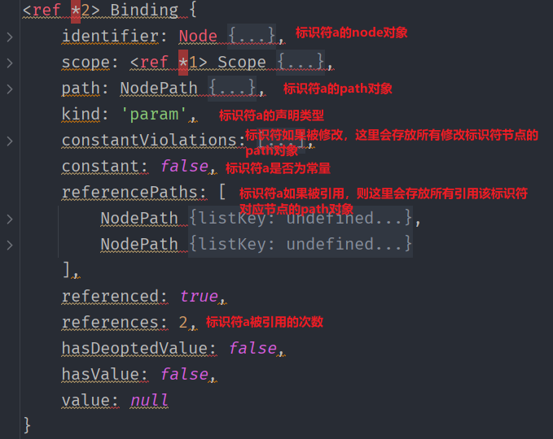
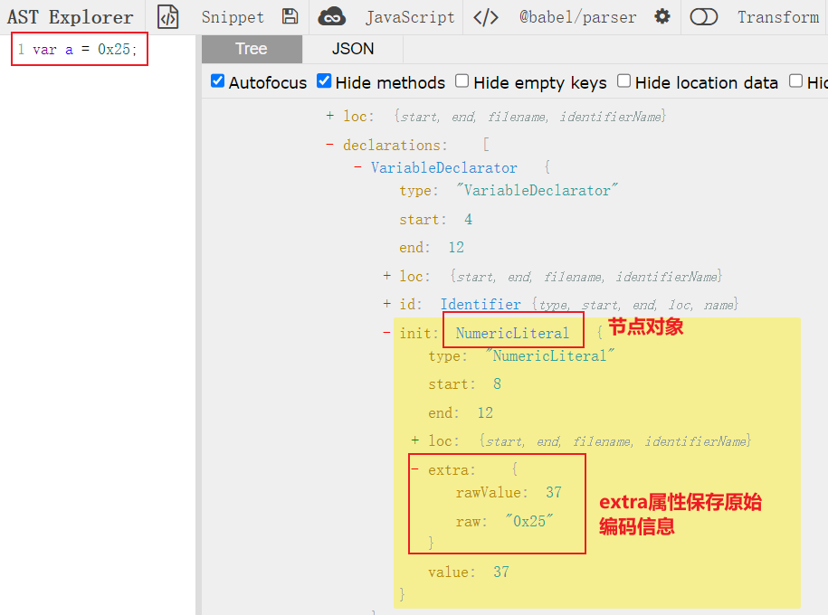
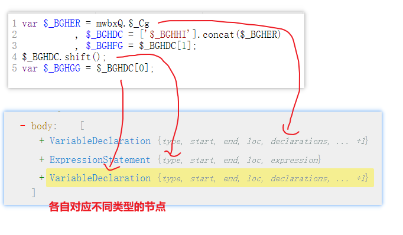
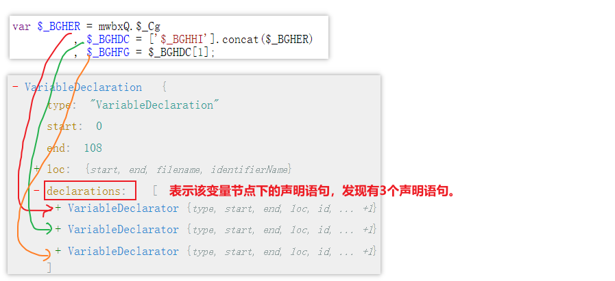
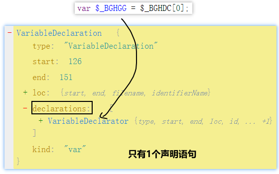
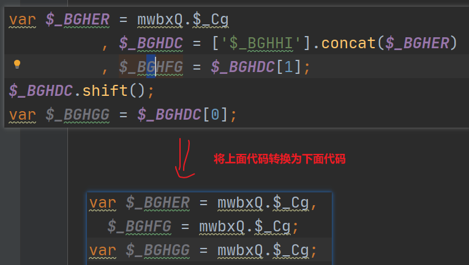
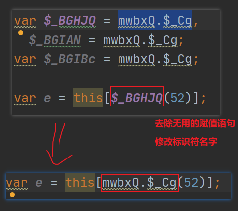
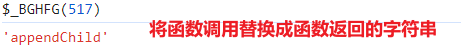
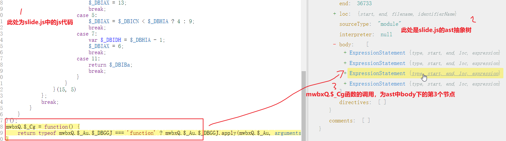

Ast系列篇
一、AST语法
1、何为混淆 ？
混淆可以理解为是一种对js代码加密技术，主要用于隐藏代码的真实功能，以防止js代码被逆向工程师分析和修改。通过混淆，让代码变得复杂和难以理解，使得逆向工程师在调试工程中消耗大量的时间或者放弃，从而达到一种保护。混淆总的来说就是一种代码保护方案，将原始代码转换为可读性较差或者没有可读性的代码。
2、何为反混淆？
反混淆就是将混淆后的代码，还原成具有可读性代码，方便逆向工程师进行调试。
3、什么是Ast？
Ast翻译成中文就是“抽象语法树”的意思。它是一种用于表示js程序代码结构的树状数据结构，用于解析和表示js源代码的语法结构。
该树状结构是由一个又一个的节点组成，每个节点(Node) 表示源代码的一个语法元素，例如：变量声明，函数定义，循环语句等，而节点之间的关系表示了语法结构的层次和关联关系。
因此，AST可以看作是js源代码的一种抽象表示形式，它去除了源代码中的具体细节，只保留了语法结构和逻辑关系。
可以将正常代码通过在线AST在线网站（https://astexplorer.net/）进行转换为AST语法树：

(1) Ast部分节点解释
-
program: 包含整个源代码，不包含注释节点。
-
type: 表示当前节点的类型
- start：表示当前节点的起始位置
- end：表示当前节点的末尾
-
loc：表示当前节点所在的行列位置
-
loc中的start，表示节点所在起始的行列位置
-
loc中的end，表示节点所在末尾的行列位置
-
sourceType：表示节点的源代码类型（js，python等），module表示为模块类型
-
body：表示代码块的主体部分。通过解析Ast中的body节点，可以提取出代码块的主体部分，并进行相应的处理或分析。这对于理解代码逻辑、调试和维护代码非常有用。
-
body节点通常会包含一个type的子节点，该子节点表示body代码块中包含的节点类型，常用的节点类型有：
- ExpressionStatement：表示一个表达式语句，用于执行某些操作或计算
- IfStatement：表示一个条件语句，根据条件执行不同的代码块。
- ReturnStatement：表示一个return语句，用于从函数中返回一个值。
- ......
- comments：用于存储存储源代码中的注释信息
(2) 前置准备
- 具备一些javascript基础和nodejs基础
- 已安装好nodejs运行环境
(3) babel介绍
Babel是一个广泛使用的JavaScript编译器，它的主要作用是将高版本的JavaScript代码转换为向后兼容的代码，以便能够在当前和旧版本的浏览器或其他环境中运行。
在反混淆中，Babel可以通过抽象语法树（AST）来解析和转换js代码。在这个过程中，Babel首先会将源代码解析成AST，然后对AST的节点进行转换，最后将转换后的AST生成为目标代码。具体过程如下：
- 解析（Parsing）：在这个阶段，Babel使用@babel/parser将源代码解析成AST。这一步涉及到词法分析和语法分析，最终将代码转换成AST形式。
- 转换（Transformation）：在转换阶段，Babel对AST的节点进行遍历，并根据需要应用一系列转换操作。这些操作可以是Babel内置的，也可以是来自插件的。转换过程中可能会对节点进行添加、删除或修改等操作。
- 生成（Code Generation）：这是Babel处理流程的最后一步，使用@babel/generator将修改后的AST转换回源代码。这个阶段生成的代码是经过转换后的版本，可以在不同的运行环境中兼容执行。
此外，Babel提供了一套丰富的API和工具，如@babel/traverse用于遍历AST节点，@babel/types提供类型检查和建设节点的方法等。通过这些工具，开发者可以创建自己的Babel插件来自定义转换过程。
总的来说，Babel是一个强大的代码转换工具，它通过操作AST来实现对JavaScript代码的转换和优化。这使得开发者可以使用最新的JavaScript特性编写代码，同时确保代码能够在不同的环境中运行。
(4) babel环境安装
安装命令：
npm i @babel/core --save-dev //Babel 编译器本身，提供了 babel 的编译 API；
npm i @babel/types //判断节点类型，构建新的AST节点等
npm i @babel/parser //将Javascript代码解析成AST语法树
npm i @babel/traverse //遍历，修改AST语法树的各个节点
npm i @babel/generator //将AST还原成Javascript代码
4、Ast反混淆代码架构
以下是使用babel库来反混淆代码的模板 : 创建encode.js（混淆代码）和decode.js（反混淆代码）文件
//AST核心组件的导入/加载
// fs模块 用于操作文件的读写
const fs = require("fs");
// @babel/parser 用于将JavaScript代码转换为ast树
const parser = require("@babel/parser");
// @babel/traverse 用于遍历各个节点的函数
const traverse = require("@babel/traverse").default;
// @babel/types 节点的类型判断及构造等操作
const types = require("@babel/types");
// @babel/generator 将处理完毕的AST转换成JavaScript源代码
const generator = require("@babel/generator").default;
// 混淆的js代码文件
const encode_file = "./encode.js"
// 反混淆的js代码文件
const decode_file = "./decode.js"
// 读取混淆的js文件
let jsCode = fs.readFileSync(encode_file, {encoding: "utf-8"});
// 将javascript代码转换为ast树
let ast = parser.parse(jsCode)
// todo 编写ast插件
const visitor = {
}
// 调用插件,处理混淆的代码
traverse(ast,visitor)
// 将处理后的ast转换为js代码(反混淆后的代码)
let {code} = generator(ast);
// 保存代码
fs.writeFile('decode.js', code, (err)=>{});
(1) babel组件介绍
parser与generator 组件
-
parser和generator这两个组件的作用是相反的。
-
parser用于将js代码转换成ast，generator用于将ast转换成js代码
-
parser将代码转换为ast：
-
let ast = parser.parse(参数一,参数二)
- 参数一：混淆的js代码
-
参数二：配置参数
- sourceType: 默认是script，当解析的js代码中，含有 import，export 等关键字的时候需要指定sourceType为module，不然会报错
-
generator将ast转换为代码：
-
let code = generator(参数一，参数二)
- 参数一：ast语法树
- 参数二：配置参数
- retainLines：表示是否使用与源代码相同的行号，默认为false，也就是输出的是格式化后的代码
- comments：表示是否保留注释，默认为true
- compact：表示是否压缩代码，取值有minified和concise，minified压缩的最多，concise压缩的最少。
```js / sourceType: 默认是script，当解析的js代码中，含有 import，export 等关键字的时候需要指定sourceType为module，不然会报错. / let ast = parser.parse(jsCode,{ sourceType:"script" })
// todo 编写ast插件 const visitor = {
}
// 调用插件,处理混淆的代码 traverse(ast,visitor)
/ 参数一：ast语法树 参数二：配置参数 retainLines：表示是否使用与源代码相同的行号，默认为false，也就是输出的是格式化后的代码 comments：表示是否保留注释，默认为true compact：表示是否压缩代码，minified压缩的最多，concise压缩的最少。 / let {code} = generator(ast,{ retainLines:false, comments:true, compact:"concise" }); // 保存代码 fs.writeFile('decode.js', code, (err)=>{}); ```
traverse 组件 与visitor
- traverse 用于遍历和转换抽象语法树（AST）的工具，转换语法树需要配置visitor使用
- visitor 是一个对象，里面可以定义一些方法，用来过滤节点
- visitor 示例代码：
//encode.js
console.log('hello ast!');
var a = 10;
//ast插件
const visitor = {
ExpressionStatement(path){
console.log("ast反混淆ing......")
}
}
traverse(ast,visitor)
-
在代码中首先声明了visitor对象，对象的名字可以任意取。
-
在visitor对象中定义一个名为ExpressionStatement的方法，这个方法的名字是需要遍历的是节点类型。
-
traverse会遍历所有节点，当节点类型为 ExpressionStatement时，调用visitor中对应的方法。
-
如果想要处理其他节点类型，那么可以继续在visitor中继续定义对应的方法
-
visitor 对象中的方法接收一个参数，traverse在遍历的时候会把当前节点的Path对象传给它，传进去的Path对象不是节点node
``` path参数/对象
- path参数，表示当前正在遍历的节点路径，path 包含有关节点相关信息的对象。
-
通过 path 对象，可以访问和操作节点的属性和关系，path 对象中又提供提供了很多内置方法供我们使用。 ```
-
最后把visitor作为第二个参数传入traverse中，传给traverse的第一个参数是整个ast。 traverse(ast,visitor) 的意思是，从头开始遍历ast中的所有节点，过滤出ExpressionStatement节点，执行相应的方法。在ast中如果有多个ExpressStatement就会输出对应的次数。
//path常用属性
const visitor = {
ExpressionStatement(path){
console.log("ast反混淆ing......");
console.log('当前节点对象:',path.node);
console.log('节点对象类型：',path.type);
console.log('节点源码：',path.toString());
}
}
traverse(ast,visitor)
- enter与exit
- 在遍历节点的过程中，实际上有两次机会来访问节点，enter表示进入节点时，exit表示退出节点时。可以在代码中编写遍历时进入要做的操作和退出时要做的操作。
const visitor = {
ExpressionStatement:{
enter(path,state){
console.log('开始学习ast')
},
exit(){
console.log('结束学习ast')
}
}
}
traverse(ast,visitor)
-
一个函数同时处理两个节点
-
可以把方法名用 | 连接起来组合成字符串的形式,这样就把同一个函数应用到多个节点
js
const visitor = {
"ExpressionStatement|VariableDeclaration":{
enter(path,state){
console.log('开始学习ast')
},
exit(){
console.log('结束学习ast')
}
}
}
traverse(ast,visitor)
-
多个函数处理一个节点：
-
把多个函数应用于同一个节点。把函数赋值给enter或exit，将enter改为接收一个函数数组就行
js
//encode.js
var a = 10;
function func(){
console.log('i am function!');
}
js
function f1(){
console.log('i am f1 of function')
}
function f2(){
console.log('i am f2 of function')
}
const visitor = {
"FunctionDeclaration":{
enter:[f1,f2]
}
}
traverse(ast,visitor)
常用的节点类型
 traverse 指定节点向下遍历
traverse 指定节点向下遍历
- traverse 可以指定在任意节点向下遍历,比如遍历到指定函数内部、while循环内部等。
- 例如，想要把代码中所有函数的第一个参数改为 x
//encode.js
var a = 10;
function func1(param1,param2){
console.log('i am function1!');
}
function func2(a1,a2){
console.log('i am function2!');
}
//ast插件B，用于修改函数参数名
const updateParamNameVisitor = {
//Identifier表示被遍历节点的标识符，如果被遍历的节点为函数，则该为函数名
Identifier(path){
if(path.node.name === this.paramName){
path.node.name = "x"
}
}
}
//ast插件，假设命名为插件A
const visitor = {
//指定需要遍历的节点类型为函数
FunctionDeclaration(path){
//获取被遍历函数的第一个参数
const paramName = path.node.params[0].name;
//调用traverse对函数节点向下遍历，修改函数的第一个参数
//此处path就特指了被遍历的函数节点的路径（调用插件B-》updateParamNameVisitor）
path.traverse(updateParamNameVisitor,{
paramName:paramName
})
}
}
// 调用插件A,处理js代码
traverse(ast,visitor)
注意：
这里的this等同于path.state， 目的都是获取path.traverse第二个参数的对象传参，也就是
{paramName:paramName}
所以可以写成
Identifier(path){
// if(path.node.name === this.paramName){
if(path.node.name === path.state.paramName){
path.node.name = "x"
}
}
types组件
types组件，主要用于判断节点类型
- 判断节点类型：例如，将js中所有标识符为a(变量名为a、函数名为a等)的节点，将其名字改为b。语法格式：types . is节点名称
//encode.js
//忽略语法错误，重点测试ast功能
var a = 10;
function a(a,num2){
return a + num2;
};
console.log(a());
const visitor = {
enter(path){
//在js代码中定位到所有标识符为a(变量名为a、函数名为a等)的节点，将其名字改为b
if(types.isIdentifier(path.node,{"name":"a"})){
path.node.name = "b";
}
}
}
// 调用插件,处理js代码
traverse(ast,visitor)
(2) 替换节点属性值
通过types组件将节点中的属性值替换为指定的属性值
示例：将当前VariableDeclarator节点下的init下的value属性的属性值替换为 123123

// todo 编写ast插件
const visitor = {
VariableDeclarator(path){
//修改为数字类型
path.node.init = types.numericLiteral(123123)
}
}
traverse(ast,visitor)
(3) 替换节点
replaceWith：该方法是节点替换节点。例如：将所有数字型变量值全部修改为123321
数字变量的节点类型NumericLiteral。

// todo 编写ast插件
const visitor = {
NumericLiteral(path){
//修改为字符串类型
path.replaceWith(types.valueToNode("123321"))
}
}
/*
* 替换后的代码:
var a = "123321";
var b = "123321";
* */
traverse(ast,visitor)
replaceWithSourceString：该方法是用字符串源码替换节点。例如：将123替换为一个函数

// todo 编写ast插件
const visitor = {
NumericLiteral(path){
path.replaceWithSourceString(`function add(a,b){return a + b}`)
}
}
traverse(ast,visitor)
/*
* 替换结果:
var a = function add(a, b) {
return a + b;
};
* */
(4) 删除节点
如果想ast遍历到当前某个没有用的节点时候进行删除可以使用，path.remove() 方法
const visitor = {
VariableDeclarator(path){
path.remove();
}
}
(5) scope作用域
在AST(抽象语法树)中，scope表示一个代码块中变量和函数的作用域。scope决定了在给定位置访问那些标识符是合法的。所谓的标识符就是用于，标识变量、函数、属性和参数的名称。
scope提供了一些属性和方法，可以方便的查找标识符的作用域：
- 获取标识符的所有引用
- 修改标识符的所有引用
- 判断标识符是否为参数
- 判断标识符是否为常量，如果不是常量，也可以知道从哪里修改它
例如，有如下js代码，通过scope提供的属性和方法进行作用域的探究：
const a = 1000;
let b = 2000;
let obj = {
name:"AST-系统学习",
add:function (a) {
a = 400;
b = 300;
let e = 700;
function demo(){
let d = 600;
}
demo();
return a + a + b + 1000 + this.name;
}
}
//定义了一个obj 对象，在该对象中，编写了一个add函数，在add函数中又定义了一个 demo 函数。这种函数在AST中的类型为：FunctionDeclaration
scope.block
scope.block 属性可以获取标识符的作用域，返回的是Node对象。
- 定位标识符为变量对应的作用域
// todo 编写ast插件
const visitor = {
Identifier(path){
if(path.node.name === "e"){
var node = path.scope.block;//获取标识符为e的作用域
//通过generator将e的作用域转换为代码
var code = generator(node).code
console.log(code)
}
}
}
traverse(ast,visitor)
- 定位标识符为函数对应的作用域
const visitor = {
//当遍历到节点为FunctionDeclaration时，将path.scope.block得到的Node对象转换为代码并输出
FunctionDeclaration(path){
var node = path.scope.block
var code = generator(node).code
console.log(code)
/* 输出结果
function demo() {
let d = 600;
}
*/
}
}
traverse(ast,visitor)
问题：上述代码最后只输出了 demo 函数，并没有输出 demo 函数所在作用域的代码，遇到这种情况需要获取父级path作用域。
const visitor = {
FunctionDeclaration(path){
//path.scope.parent 获取的是当前节点的父节点的作用域，然后在通过 block 获取标识符作用域
var node = path.scope.parent.block
var code = generator(node).code
console.log(code)
}
}
traverse(ast,visitor)
scope.dump
scope.dump 会得到自己向上的作用域与变量信息，先输出自己当前的作用域，再输出父级作用域，再输出父级的父级的作用域，直到顶级作用域。
const visitor = {
//当遍历到节点为FunctionDeclaration时，将path.scope.block得到的Node对象转换为代码并输出
FunctionDeclaration(path){
//获取demo函数名
console.log("函数: ",path.node.id.name + "()")
//输出demo函数所有上层作用域
path.scope.dump()
}
}
traverse(ast,visitor)
输出结果解释：
可以看到输出的结果：输出了三个作用域
- 输出自己当前的作用域：FunctionDeclaration
- 输出父级作用域：FunctionExpression
- 输出父级的父级作用域：Program
输出内容解读：
1.# 开头的是每一个作用域，上面输出的内容中一共有3个作用域
2.- 开头的是每一个作用域的绑定(binding)，每一个binding都会包含其作用域内相关“标识符”的几个关键信息，分别是:constant，references，violations，kind
- constant：表示是否为常量，true为常量，否false
- references：表示被引用的次数
- violations: 这表示在该函数声明中没有违反任何规则或约定。
- kind：表示声明类型
- param 表示参数
- hoistend 提升
- var 变量
- local 内部
- ......
scope.getBinding
path.scope.getBinding 用于获取指定标识符在当前作用域中的绑定信息。这个方法通常在遍历 AST 时使用，以检查变量、函数等是否已经在当前作用域中定义。
绑定信息通常指的是变量、函数或类等标识符与其对应的值之间的关系。当你声明一个变量并给它赋值时，这个变量就被绑定到了特定的值。同样地，当你定义一个函数或类时，它们也被绑定到了相应的函数体或类定义。
path.scope.getBinding方法用于获取当前作用域中的绑定信息。这意味着它会返回一个对象，该对象包含了关于指定标识符的信息，例如它是否被声明、是否是全局的、是否是常量等。这些信息可以帮助你理解代码的结构以及标识符的使用情况。
假设我们有以下JavaScript代码：
let x = 10;
function add(a, b) {
return a + b;
}
console.log(add(x, 5));
在这个例子中，x是一个变量，它被绑定到了值10；add是一个函数，它被绑定到了函数体{ return a + b; }。如果我们在遍历过程中遇到一个标识符x，我们可以调用path.scope.getBinding('x')来获取它的绑定信息。这将返回一个对象，其中包含了关于x的信息，例如它的声明类型（可能是'let'或'var'），以及它在作用域中的引用情况等。通过这种方式，我们可以深入了解代码的结构和使用情况，这对于代码分析和转换工具非常有用。
const visitor = {
FunctionDeclaration(path){
let binding = path.scope.getBinding("a")
console.log(binding)
}
}
traverse(ast,visitor)

scope.traverse
- scope.traverse方法用于遍历当前作用域中的节点。
- 也可以使用binding中的scope遍历binding.scope.traverse()
//将d的值修改为666999
const visitor = {
FunctionDeclaration(path) {
//获取标识符d的binding
let binding = path.scope.getBinding('d'); //也可以用标识符e
// binding.scope.block 表示在遍历时,在当前作用域中遍历
binding.scope.traverse(binding.scope.block, {
//遍历到变量类型的节点时，将d的值修改为666999
VariableDeclarator(p) {
if (p.node.id.name === "d") {
p.node.init = types.numericLiteral(666999)
}
}
})
}
}
traverse(ast,visitor)
(6) 练习
练习1：有如下代码：
var b = 1 + 2;
var c = "coo" + "kie";
var a = 1+1,b = 2+2;
var c = 3;
var d = "1" + 1;
var e = 1 + '2';
将其还原成：(表达式节点遍历，然后提取表达式元素，进行计算后替换)
var b = 3;
var c = "cookie";
var a = 2,b = 4;
var c = 3;
var d = "11";
var e = "12";
实现：
const parse = require('@babel/parser')
const traverse = require('@babel/traverse').default
const types = require('@babel/types')
const generator = require("@babel/generator").default;
// JS 转 ast语法树
jscode = `var b = 1 + 2;
var c = "coo" + "kie";
var a = 1+1,b = 2+2;
var c = 3;
var d = "1" + 1;
var e = 1 + '2';
`
// 转换js代码为ast树结构
let ast = parse.parse(jscode);
// 用查找定位节点(ast结构树, 访问器对象)
traverse(ast, {
//遍历表达式节点
BinaryExpression(path) {
// 取出表达式的各个元素：1 + 2
var {left, operator, right} = path.node
//console.log(left.value,operator,right.value)
// 数字相加处理
if (types.isNumericLiteral(left) && types.isNumericLiteral(right) && operator == "+" ) {
value = left.value + right.value
// console.log(value);
// 会把原来的节点当中的原来的值进行替换
path.replaceWith(types.valueToNode(value))
// console.log(path.parentPath.node)
}
//字符串相加
if (types.isStringLiteral(left) && types.isStringLiteral(right) && operator == "+") {
value = left.value + right.value
// console.log(value);
// 会把原来的节点当中的原来的值进行替换
path.replaceWith(types.valueToNode(value))
}
if (types.isStringLiteral(left) && types.isNumericLiteral(right) && operator
== "+" || types.isNumericLiteral(left) && types.isStringLiteral(right)) {
value = left.value + right.value
// console.log(value);
// 会把原来的节点当中的原来的值进行替换
path.replaceWith(types.valueToNode(value))
}
}
})
// 将ast还原成JavaScript代码
let {code} = generator(ast);
console.log(code)
练习2：
源代码：var arr = '3,4,0,5,1,2'['split'](',')
还原后：var arr = ["3", "4", "0", "5", "1", "2"]
const parse = require('@babel/parser')
const traverse = require('@babel/traverse').default
const types = require('@babel/types')
const generator = require("@babel/generator").default;
// JS 转 ast语法树
jscode = `
var arr = '3,4,0,5,1,2'['split'](',')
`
// 转换js代码为ast树结构
let ast = parse.parse(jscode);
traverse(ast, {
//遍历函数调用节点（split函数）
CallExpression(path) {
//获取函数调用节点的调用者callee和函数参数arguments
let {callee, arguments} = path.node
// 通过打印节点的树结构决定访问哪些属性
//console.log(callee.object.value,arguments[0].value)
let data = callee.object.value //获取split函数调用者
let func = callee.property.value //获取函数名
let arg = arguments[0].value //获取split函数参数
var res = data[func](arg) //调用函数获取返回值
//用于替换当前节点
path.replaceWith(types.valueToNode(res))
}
})
// 将ast还原成JavaScript代码
let {code} = generator(ast);
console.log(code)
练习3：编码类型还原

通过检查node.extra.raw的值，我们可以确定这个数字字面量是以哪种编码类型表示的（如十六进制、八进制或二进制），然后根据需要将其转换为相应的十进制数值。
通过将node.extra设置为undefined，我们可以确保在后续的处理过程中，这个数字字面量被视为一个普通的十进制数，而不受其原始编码类型的干扰。
//处理前：
var a = 0x25,b = 0b10001001,c = 0o123456,
d = "\x68\x65\x6c\x6c\x6f\x2c\x41\x53\x54",
e = "\u0068\u0065\u006c\u006c\u006f\u002c\u0041\u0053\u0054";
//处理后：
var a = 37,b = 137,c = 42798,d = "hello,AST",e = "hello,AST"
const parse = require('@babel/parser')
const traverse = require('@babel/traverse').default
const types = require('@babel/types')
const generator = require("@babel/generator").default;
// JS 转 ast语法树
jscode = `
var a = 0x25,b = 0b10001001,c = 0o123456,
d = "\x68\x65\x6c\x6c\x6f\x2c\x41\x53\x54",
e = "\u0068\u0065\u006c\u006c\u006f\u002c\u0041\u0053\u0054";
`
let ast = parse.parse(jscode);
const visitor = {
NumericLiteral({node}) {
//如果节点存在extra属性且raw是以0o、0b或者0x开头的
//i表示不区分大小写匹配，意味着在匹配时忽略字符的大小写差异。
if (node.extra && /^0[obx]/i.test(node.extra.raw)) {
//移除了数字字面量节点的编码类型信息。
node.extra = undefined;
}
},
StringLiteral({node}) {
//如果节点存在extra属性且raw是以\u或者\x
//g 表示全局匹配,意味着在整个字符串中查找所有匹配项，而不仅仅是找到第一个匹配就停止。
if (node.extra && /\\[ux]/gi.test(node.extra.raw)) {
//移除了数字字面量节点的编码类型信息。
node.extra = undefined;
}
},
}
traverse(ast,visitor);
let {code} = generator(ast);
console.log(code);
二、Ast反混淆实战
基于ast实现极验平台滑动验证时slide.js中的混淆代码。
极验：https://www.geetest.com/show
1、字符解码
下列函数的函数名都是基于unicode编码后的字符串，通过ast对其进行字符解码
Ze[$_DADR(91)] = {
"\u0024\u005f\u0042\u004a\u0045\u0054": function (e, t) {
var $_CECDo = PaLDJ.$_CS
, $_CECC_ = ['$_CECGP'].concat($_CECDo)
, $_CECEX = $_CECC_[1];
$_CECC_.shift();
var $_CECFB = $_CECC_[0];
}
}
function decrypt_str(ast){ //1.字符解码
traverse(ast,{
//遍历字符串节点和数字节点（数字编码or字符编码）
'StringLiteral|NumericLiteral'(path){
//删除节点中的extra属性
delete path.node.extra.raw
//或者：path.node.extra = undefined
}
})
return ast
}
复制slide.js文件所有内容到encode.js文件中，调用decrypt_str函数使用字符编码的反混淆
2、Fiddler进行js文件替换
处理跨域问题：在Filters的Set Response Headers中添加
"Access-Control-Allow-Origin":"*"

注意：录入被替换的js链接前可以加上EXACT:
EXACT:https://static.geetest.com/static/js/slide.7.9.2.js
然后，刷新一下网页，查看js文件是否已经被替换成你想替换的内容，并做相应的测试；刷新后fiddler替换js文件如果失败，可如下操作，网页端谷歌开发者工具勾选Network>Disable cache；以防浏览器里面有js源文件的缓存，可能导致fiddler替换js文件失败；

3、重复引用赋值反混淆
var $_BGHER = mwbxQ.$_Cg
, $_BGHDC = ['$_BGHHI'].concat($_BGHER)
, $_BGHFG = $_BGHDC[1];
$_BGHDC.shift();
var $_BGHGG = $_BGHDC[0];
//核心代码
var e = this[$_BGHER(37)];
查看分析上述代码的ast结构：

上述代码分别对应了ast中三种不同类型的节点，分别是变量节点1，函数调用节点和变量节点2。
变量“节点1”的ast结构展开后：

变量“节点2”的ast结构展开后：

前置知识点
- node.declarations：
- 在AST中，node.declarations包含了当前节点下的所有声明语句。变量节点1中有3个声明语句。变量节点2中只有1个声明语句。
- node.declarations.length：
- 表示的是当前节点中声明语句的数量。在上面需要反混淆的代码中，有两个VariableDeclaration类型节点，各自声明的数量是3和1。
- node.declarations[0].init：表示的是第一个声明语句中的声明的部分
- generator(node.declarations[0].init).code：使用生成器（generator）将第一个声明语句的声明转换为代码字符串。
function func_replace(path) {
const node = path.node;
//将变量节点1（声明语句数量为3）中声明语句的数量和声明部分获取并显示
if(node.declarations.length == 3){
console.log('变量节点1中声明语句的数量为:'+node.declarations.length)
console.log('变量节点1的第一个声明部分为:'+generator(node.declarations[0].init).code)
console.log('变量节点1的第二个声明部分为:'+generator(node.declarations[1].init).code)
console.log('变量节点1的第三个声明部分为:'+generator(node.declarations[2].init).code)
}
}
// 编写ast插件,然后调用插件
traverse(ast,{VariableDeclaration:func_replace,})
实现步骤1
//测试代码
var $_BGHER = mwbxQ.$_Cg
, $_BGHDC = ['$_BGHHI'].concat($_BGHER)
, $_BGHFG = $_BGHDC[1];
$_BGHDC.shift();
var $_BGHGG = $_BGHDC[0];
//核心代码
var e = this[$_BGHER(37)];

function func_replace(path){
const node = path.node;
//过滤变量节点声明语句数量不为3的节点（过滤变量节点2）
if(node.declarations.length !== 3)return
//过滤第一个声明部分不是"mwbxQ.$_Cg"的变量节点
if(generator(node.declarations[0].init).code !== "mwbxQ.$_Cg")return
//将变量节点1的第1个声明语句和第3个声明语句保存到node.declarations数组中的两个元素
//至此，变量节点1只保留了2个声明部分，原来的第二个声明部分被省略了
node.declarations = [node.declarations[0],node.declarations[2]]
/*将数组中第0个元素表示的声明语句的声明部分赋值给第1个元素，也就是将变量节点1中的第一个声明语句的声明部分赋值给第三个声明语句的声明部分*/
node.declarations[1].init = node.declarations[0].init
//path.getNextSibling()用于获取当前节点的下一个同级节点（即兄弟节点）
//将变量节点1的下一个节点（函数节点进行删除）
path.getNextSibling().remove()
//将数组中第0个元素（变量节点1）表示的声明部分赋值给变量节点1下一个节点的声明部分
path.getNextSibling().node.declarations[0].init = node.declarations[0].init
}
// todo 编写ast插件
traverse(ast,{VariableDeclaration:func_replace,})
实现步骤2
//测试代码
var $_BGHER = mwbxQ.$_Cg
, $_BGHDC = ['$_BGHHI'].concat($_BGHER)
, $_BGHFG = $_BGHDC[1];
$_BGHDC.shift();
var $_BGHGG = $_BGHDC[0];
//核心代码
var e = this[$_BGHER(37)];

function func_replaces(path){
const node = path.node
const scope = path.scope
//获取变量节点中所有声明语句的变量名（$_BGHER，$_BGHFG，$_BGHGG，mwbxQ.$_Cg，e）
const leftName = node.id.name
//过滤掉声明语句的声明部分不是"mwbxQ.$_Cg"的变量节点
if(generator(node.init).code !== "mwbxQ.$_Cg")return
//获取leftName表示变量名的作用域（仅在该作用域下处理相关操作）
let binding_left = scope.getBinding(leftName)
//如果leftName作用域中该变量path的引用节点数不为0（只有第一个变量节点被额外在最后一行引用了1次，剩下都为0）
if(binding_left.referencePaths.length !== 0){
//遍历所有引用第一个变量节点的path（上图中只额外引用了一次，真实js代码中会有更多次引用）
//在第一个变量节点作用域下遍历其他几点
binding_left.referencePaths.forEach(function (path){
//创建了一个标识符节点，该节点表示的字符串为"mwbxQ"，将该节点作用与left_path常量
const left_path = types.identifier("mwbxQ")
const right_path = types.identifier("$_Cg")
//创建了一个表达式节点，该节点表示的字符串为“mwbxQ.$_Cg”
const replace_path = types.memberExpression(left_path,right_path);
//path路径替换，因为path中包含了node对象，也可以理解为节点替换
//所有引用第一个变量节点的标识符全部替换成“mwbxQ.$_Cg”
path.replaceWithMultiple(replace_path)
})
}
//删除值为“mwbxQ.$_Cg”对应的节点对象
path.remove()
}
traverse(ast,{VariableDeclarator:func_replaces,})
函数调用替换
将带数字参数的函数返回的字符串替换该函数的调用。

此时，所有带数字的函数名都被上一步修改为了“mwbxQ.$_Cg”，因此，$_BGHFG(517)就已经变为了mwbxQ.$_Cg(517)。
找到函数定义部分并对其进行执行---在浏览器抓包工具中先定位到slide.js文件，定位到最上面，相关函数的定义部分如下：
//该函数定义部分是slide.js文件中声明的第三个赋值节点表示的函数定义
mwbxQ.$_Cg = function() {
return typeof mwbxQ.$_Au.$_DBGGJ === 'function' ? mwbxQ.$_Au.$_DBGGJ.apply(mwbxQ.$_Au, arguments) : mwbxQ.$_Au.$_DBGGJ;
}

js测试代码：可以使用slide.js文件里所有的js源码。
/*
从slide.js中找到mwbxQ.$_Cg函数定义位置代码，将其进行执行。方便后期对该函数的直接调用。
slide.js中代码比较多，但是发现该函数为自上而下第3个定义的函数，因此将js文件中前几个函数定义代码取出，对其统一进行执行即可。
*/
function func_decrypt_str(ast){
//将一个空字符串解析成ast抽象树，此时body节点下是空的
let newAst = parser.parse('')
//将ast也就是slide.js代码的ast树body下的前5个节点（包含了mwbxQ.$_Cg函数和其他几个函数定义节点）取出赋值给newAst的body。取出的节点尽量多一点，满足函数的调用关系，可以为5,6,7,8,9都行。
newAst.program.body = ast.program.body.slice(0,5)
//将newAst转换为js代码
let stringDecryptFunc = generator(newAst,{compact:true,}).code
//执行转换后的js代码（表示将mwbxQ.$_Cg函数定义的代码执行了）
eval(stringDecryptFunc)
//获取解密函数的名字
const stringDecryptFuncAst = ast.program.body[2]//定位到mwbxQ.$_Cg函数节点
//提取出该函数函数名左侧部分（对象名）：mwbxQ
const DecryptLeftFuncName = stringDecryptFuncAst.expression.left.object.name
//提取出该函数函数名右侧部分（属性名）：$_Cg
const DecryptRightFuncName = stringDecryptFuncAst.expression.left.property.name
//调用函数获取返回值替换到函数调用位置
traverse(ast,{
//定位CallExpression函数调用类型节点
CallExpression(path){
//进行一系列判断，目的是定位到名为mwbxQ.$_Cg的函数调用
/*
types.isMemberExpression(path.node.callee)用于判断 path.node.callee 是否为成员表达式的函数。callee为函数节点对象。
*/
if(types.isMemberExpression(path.node.callee) &&
//判断callee函数对象的对象名是否等于DecryptLeftFuncName
path.node.callee.object.name &&
path.node.callee.object.name === DecryptLeftFuncName &&
//判断callee函数对象的属性名是否等于DecryptRightFuncName
path.node.callee.property.name &&
path.node.callee.property.name === DecryptRightFuncName){
//将函数调用结果替换函数调用
path.replaceWith(types.valueToNode(eval(path.toString())))
}
}
})
return ast
}
switch控制流处理
测试代码：每一个case依次执行
//一个case的情况
function $_BBo(t) {
var $_DAIAx = mwbxQ.$_DW()[0][13];
for (; $_DAIAx !== mwbxQ.$_DW()[3][12]; ) {
switch ($_DAIAx) {
case mwbxQ.$_DW()[3][13]:
return t[$_CJFt(30)] ? t[$_CJES(14)] : t;
break;
}
}
}
//多个case情况
function re(t) {
var $_DBFFL = mwbxQ.$_DW()[6][13];
for (; $_DBFFL !== mwbxQ.$_DW()[6][11];) {
switch ($_DBFFL) {
case mwbxQ.$_DW()[9][13]:
var e = this
, n = t[$_CJES(67)];
e[$_CJFt(434)] = t[$_CJES(434)],
e[$_CJES(464)] = t,
$_DBFFL = mwbxQ.$_DW()[3][12];
break;
case mwbxQ.$_DW()[0][12]:
var r = n[$_CJES(604)]
, i = $_CJES(602) + n[$_CJFt(661)];
w && (i += $_CJFt(648))
$_DBFFL = mwbxQ.$_DW()[9][11];
break;
}
}
}
ast代码：
function func_switch(path){
/*
下面node=path.node表示定位到测试代码中的函数定义节点
node.body表示函数节点的函数体部分
node.body.body表示函数体中的两个子节点（变量节点node.body.body[0] & for循环节点node.body.body[1]）
*/
const node = path.node
//如果node.body.body[0]节点存在并且节点类型为变量类型则向下执行代码
if(!(node.body.body[0] && node.body.body[0].type === "VariableDeclaration"))return
//如果node.body.body[0]节点存在且声明语句的数量为1则向下执行代码
if(!(node.body.body[0].declarations && node.body.body[0].declarations.length === 1))return
//如果switch节点下存在case子节点则向下执行代码
if(!(node.body.body[1].body.body[0].cases[0]))return
//如果case下面不存在可执行的代码块consequent则继续向下执行代码
if(!(node.body.body[1].body.body[0].cases[0].consequent))return
//定位到下标为0的case下面的代码块
const consequent = node.body.body[1].body.body[0].cases[0].consequent
//获取case下代码块的执行语句数量
const consequent_length = consequent.length
//获取case下倒数第二个执行语句
const conseq_two = consequent[consequent_length-2]
//如果只有一个case的情况下（忽略，看懂else就可以看懂if下的代码内容，直接看else，因为测试代码有2个case）
if(node.body.body[1].body.body[0].cases.length === 1){
if(conseq_two.type === "ExpressionStatement" &&
conseq_two.expression &&
conseq_two.expression.type === "AssignmentExpression" &&
conseq_two.expression.right &&
conseq_two.expression.right.type === "MemberExpression" &&
conseq_two.expression.right.property &&
conseq_two.expression.right.property.type === "NumericLiteral"){
node.body.body = consequent.slice(0,-2)
}else{
node.body.body = consequent.slice(0,-1)
}
}else{ //有2个或多个case的情况
var merge_array = [] //1.空数组，用来存储处理好的case语句
//2.获取case的数量
var case_length = node.body.body[1].body.body[0].cases.length
//3.遍历每一个case
node.body.body[1].body.body[0].cases.forEach(function (node){
case_length -= 1 //4.case个数减去1，因为case节点下标是从0开始的
//5.第一次循环case_length为1，因此该if不走，if会在第二次循环执行，用来处理第2个case。因此先看else语句的执行
if(case_length === 0){
//7.开始第二次循环，此时case_length被减了1值为0，因此执行该if语句
//获取第二个case的执行语句数量（4个）
const node_consequent_length = node.consequent.length
//获取case的第三个执行语句
const node_second = node.consequent[node_consequent_length - 2]
//如果case第三个执行语句满足如下条则
if(node_second.type === "ExpressionStatement" &&
node_second.expression &&
node_second.expression.type === "AssignmentExpression" &&
node_second.expression.right &&
node_second.expression.right.type === "MemberExpression" &&
node_second.expression.right.property &&
node_second.expression.right.property.type === "NumericLiteral"){
//则保留case语句的前3条存储到merge_array中
merge_array = merge_array.concat(node.consequent.slice(0,-2))
}else{
merge_array = merge_array.concat(node.consequent.slice(0,-1))
}
}else{ //处理第一个case
//6.保留第一个case中3条执行语句的第一条，存放在merge_aray数组中。
//即将开始第二次循环处理第2个case语句
merge_array = merge_array.concat(node.consequent.slice(0,-2))
}
})
//8.将整理好的merge_array替换函数体的两个子节点
// node.body.body表示函数体中的两个子节点
node.body.body = merge_array
}
}
//执行ast插件
traverse(ast,{FunctionDeclaration: func_switch,})
完整ast代码
// fs模块 用于操作文件的读写
const fs = require("fs");
// @babel/parser 用于将JavaScript代码转换为ast树
const parser = require("@babel/parser");
// @babel/traverse 用于遍历各个节点的函数
const traverse = require("@babel/traverse").default;
// @babel/types 节点的类型判断及构造等操作
const types = require("@babel/types");
// @babel/generator 将处理完毕的AST转换成JavaScript源代码
const generator = require("@babel/generator").default;
// 混淆的js代码文件
const encode_file = "./encode.js"
// 反混淆的js代码文件
const decode_file = "./decode.js"
// 读取混淆的js文件
let jsCode = fs.readFileSync(encode_file, {encoding: "utf-8"});
// 将javascript代码转换为ast树
let ast = parser.parse(jsCode)
//ast反混淆插件编写
function decrypt_str(ast){ //1.字符解码
traverse(ast,{
//遍历字符串节点和数字节点(因为有科学计数法表示的数组)
'StringLiteral|NumericLiteral'(path){
//删除节点中的extra属性
delete path.node.extra.raw
}
})
return ast
}
function func_replace(path){
const node = path.node;
if(node.declarations.length !== 3)return
if(generator(node.declarations[0].init).code !== "mwbxQ.$_Cg")return
node.declarations = [node.declarations[0],node.declarations[2]]
node.declarations[1].init = node.declarations[0].init
path.getNextSibling().remove()
path.getNextSibling().node.declarations[0].init = node.declarations[0].init
}
function func_replaces(path){
const node = path.node
const scope = path.scope
const leftName = node.id.name
if(generator(node.init).code !== "mwbxQ.$_Cg")return
let binding_left = scope.getBinding(leftName)
if(binding_left.referencePaths.length !== 0){
binding_left.referencePaths.forEach(function (path){
const left_path = types.identifier("mwbxQ")
const right_path = types.identifier("$_Cg")
const replace_path = types.memberExpression(left_path,right_path);
path.replaceWithMultiple(replace_path)
})
}
path.remove()
}
function func_decrypt_str(ast){
//将解密代码执行
let end = 5
let newAst = parser.parse('')
newAst.program.body = ast.program.body.slice(0,end)
let stringDecryptFunc = generator(newAst,{compact:true,}).code
eval(stringDecryptFunc)
//获取解密函数的名字
const stringDecryptFuncAst = ast.program.body[2]
const DecryptLeftFuncName = stringDecryptFuncAst.expression.left.object.name
const DecryptRightFuncName = stringDecryptFuncAst.expression.left.property.name
//调用解密函数的代码执行，将执行后的值替换调用解密函数的代码
traverse(ast,{
CallExpression(path){
if(types.isMemberExpression(path.node.callee) &&
path.node.callee.object.name &&
path.node.callee.object.name === DecryptLeftFuncName &&
path.node.callee.property.name &&
path.node.callee.property.name === DecryptRightFuncName){
path.replaceWith(types.valueToNode(eval(path.toString())))
}
}
})
return ast
}
function func_switch(path){
const node = path.node
if(!(node.body.body[0] && node.body.body[0].type === "VariableDeclaration"))return
if(!(node.body.body[0].declarations && node.body.body[0].declarations.length === 1))return
if(!(node.body.body[1].body.body[0].cases[0]))return
if(!(node.body.body[1].body.body[0].cases[0].consequent))return
const consequent = node.body.body[1].body.body[0].cases[0].consequent
const consequent_length = consequent.length
const conseq_two = consequent[consequent_length-2]
if(node.body.body[1].body.body[0].cases.length === 1){
if(conseq_two.type === "ExpressionStatement" &&
conseq_two.expression &&
conseq_two.expression.type === "AssignmentExpression" &&
conseq_two.expression.right &&
conseq_two.expression.right.type === "MemberExpression" &&
conseq_two.expression.right.property &&
conseq_two.expression.right.property.type === "NumericLiteral"){
node.body.body = consequent.slice(0,-2)
}else{
node.body.body = consequent.slice(0,-1)
}
}else{
var merge_array = []
var case_length = node.body.body[1].body.body[0].cases.length
node.body.body[1].body.body[0].cases.forEach(function (node){
case_length -= 1
if(case_length === 0){
const node_consequent_length = node.consequent.length
const node_second = node.consequent[node_consequent_length - 2]
if(node_second.type === "ExpressionStatement" &&
node_second.expression &&
node_second.expression.type === "AssignmentExpression" &&
node_second.expression.right &&
node_second.expression.right.type === "MemberExpression" &&
node_second.expression.right.property &&
node_second.expression.right.property.type === "NumericLiteral"){
merge_array = merge_array.concat(node.consequent.slice(0,-2))
}else{
merge_array = merge_array.concat(node.consequent.slice(0,-1))
}
}else{
merge_array = merge_array.concat(node.consequent.slice(0,-2))
}
})
node.body.body = merge_array
}
}
function delete_func(path){
if(path + '' === "mwbxQ.$_DW()"){
path.parentPath.parentPath.parentPath.parentPath.remove()
}
}
//1.字符解码
decrypt_str(ast)
//2.重复引用赋值反混淆
traverse(ast,{VariableDeclaration:func_replace,})
traverse(ast,{VariableDeclarator:func_replaces,})
//3.带数字参数的函数返回字符串替换该函数的调用
func_decrypt_str(ast)
//4.switch控制流处理
traverse(ast,{FunctionDeclaration: func_switch,})
//5.删除无用函数(还有一些swith为空的代码进行删除)
traverse(ast,{CallExpression:delete_func,})
ast.program.body = ast.program.body.slice(5)
// const visitor = {}
// traverse(ast,visitor)
// 将处理后的ast转换为js代码(反混淆后的代码)
let {code} = generator(ast);
// 保存代码
fs.writeFile('decode.js', code, (err)=>{});
三、AST进阶
网站：https://www.mps.gov.cn/ 内容：加速乐一键解混淆 混淆代码
var _0x2414 = ['wr7CksK8Uw==', 'wrbDosKFOQ==', 'woZNHCg=', 'w48zCBM=', 'wrbCnAka', 'bcOJKcO8', 'KCnDpMK3', 'w6F9FyY=', 'w5Rjw5xZ', 'WcKGGn4=', 'w7BVw6hs', 'M8OVwpc=', 'Ax7DscOB', 'IWjCh8K3', 'GsODeMK7', 'w6jCmVE0', 'eEguwpE=', 'wrcfd8Ow', 'FcOVcsKD', 'w5jDhcKWMQ==', 'w5oODT0=', 'NsOCAH4=', 'w7AwXMON', 'QA1hw50=', 'wrnCpWfDuA==', 'LyjDmcOo', 'MxspHQ==', 'wpTDgsKDCw==', 'w7pUw6Ni', 'w5gfw7s=', 'IEUwEw==', 'Q24CFw==', 'w6dodMOG', 'w69UFsKJ', 'wqDCsQIH', 'wp3DgcKTTw==', 'ccO1w7rDsQ==', 'MCDDosO+', 'asKPwpPCgg==', 'HcOhXsK8', 'OMOOwoPClg==', 'K3fCnTM=', 'w4EyFB0=', 'w4tWGw==', 'wp54Ggw=', 'bMOhW0g=', 'wr1XJy0=', 'OXDCrcKE', 'wpAPw5oq', 'H1LCpMKg', 'FjkCUA==', 'b0nDo3Y=', 'w7EQS20=', 'wogzExo=', 'wrYQccOt', 'ElfCocKf', 'KhA+eQ==', 'wofDmyTDvA==', 'w6HDpcK9LQ==', 'wqsJw480', 'w6rDmHbDgA==', 'w7Faw5VM', 'wrTCpcOcwoQ=', 'wrzDuSbDoA==', 'I8OpKUw=', 'w5IZw63Dvw==', 'wo/CqsKlaw==', 'w4ogAwY=', 'woc3ERE=', 'VMOBeWw=', 'woU1QsKs', 'wrPCsmbDsg==', 'c8OKW3I=', 'fTnCuMKG', 'w4c6BcOm', 'wqTDusKEWA==', 'w5sjw7jDgA==', 'wrs7UcO4', 'w7UaNh8=', 'dA3DnDE=', 'woY9w5Er', 'NsORIVc=', 'w5pebsOH', 'QhRmw50=', 'Q8OBSF8=', 'XsKfBV8=', 'AiUsJQ==', 'wrwAVMOR', 'P37CnCI=', 'QMOXdW8=', 'wq3DkMKYw7s=', 'wr0TT8OT', 'aEdocw==', 'YMOoIyI=', 'w5pUw6hs', 'wrXCu8K6VQ==', 'wogwb8Ku', 'wqE2ZcKu', 'ZEwtRA==', 'woLDmcKSUw==', 'woEyVsOb', 'IELCgMKn', 'w6lKCww=', 'EyPDjcKx', 'HQhoYA==', 'w75BLTk=', 'dMKROGA=', 'wpDDqhPDhQ==', 'wpXDr8K4KA==', 'XUh7wpY=', 'wqTCm8KYdA==', 'GgE9GQ==', 'wpojfg==', 'wq0+LhI=', 'w5wiw4HDkg==', 'N8Otb8Kh', 'wr4Pw6kh', 'w6oRFAQ=', 'wo11Fzk=', 'wpwDV8OY', 'IsOfWMKA', 'QkAQHg==', 'wrVhHjY=', 'wqjCn8KTRA==', 'SAjDgBc=', 'w58/w4/DjA==', 'PcOJBE8=', 'EjM6Tg==', 'woYiw6M3', 'wr/DmsKJLA==', 'w7fDj8KBJw==', 'ZlHDrHk=', 'woAqw6kL', 'Rw5ow4I=', 'WcOFw7TDng==', 'w4FwCww=', 'wrwOw6c4', 'w5jDiETDhA==', 'w50Kw7zDtg==', 'wq0zDAc=', 'w5R4CQY=', 'w7xNw61l', 'GzIfBg==', 'w5nDgXDDvw==', 'wrjCv8OQwpk=', 'w7kEw6zDvA==', 'RHkgwpA=', 'w6s8PB0=', 'HzzDrMKX', 'w5UtV8OF', 'IsOXwobCiA==', 'AyooVA==', 'wo3CgsK4Rw==', 'wp8hBRA=', 'wpHCl8OFwoI=', 'WUogNQ==', 'wrHDu8KxEw==', 'wr8Cw5U/', 'wqHDoMKKRw==', 'VcOdGsO7', 'wq4AVMOb', 'wqc2SsKC', 'wpMKEDc=', 'BA7DgMKb', 'a2MiJw==', 'bcO9Uw==', 'wqvDt8KLTQ==', 'wrLDkBJx', 'FcOSd8KU', 'KDjDg8Kp', 'wo8yQcO4', 'wr01ccKO', 'w6zCnVUw', 'YcOPCMO1', 'wp0hw40w', 'Vhllw4s=', 'd8KPFVs=', 'ezFGw7Y=', 'OsOVTcKm', 'KBoh', '6K6b5rOe6aus6K+P', 'w5/CjsKgOg==', 'S8OYHcO8', 'DTMCLw==', 'fMK3Hko=', 'w4zDtsKXMQ==', 'woHDtTDDiQ==', 'IhvDhMOk', 'P2jCoA0=', 'wpzCi8Oswpg=', 'wpIUTsOv', 'cQRiw4k=', 'WwvDjzY=', 'wqnDs8KTQw==', 'TTPCvcKR', 'wrTDjQ1g', 'KU3Coj4=', 'OkrDm8O1', 'ckkyMg==', 'wofDssK6w4Y=', 'fVnDl8Kj', 'w5AAEjo=', 'ElfCmTs=', 'SG8WwpA=', 'PVLCrcKv', 'NRMJKQ==', 'w57DuMKACg==', 'wrDCm8Kzdg==', 'WsO9Wl8=', 'w6dSwo1v', 'w4RcGRg=', 'worCqAg6', 'wrbDqhXDqQ==', 'ZsOIKTM=', 'UcOnw43Dpg==', 'JR3DgsKk', 'MMOGwqDCqA==', 'ZMOCPTE=', 'FHTCjzA=', 'w55oLDo=', 'wqHCqCnCog==', 'd8KIEEw=', 'wr3DlA7DuQ==', 'YMOKVXM=', 'wp/DtMKpw4o=', 'wqPCml/DjA==', 'wo/CvMOFwqM=', 'bMKqFlk=', 'FMOsworClA==', 'QgHDggw=', 'Y8KGwo7Dkg==', 'G0nCksKd', 'wr1jJBg=', 'w53CtMKUKg==', 'w73CuMKQPg==', 'BAQ0cw==', 'w5l9JAQ=', 'w43ChxXDkg==', 'DkvDhMKe', 'SW7DlGc=', 'w7nDv17Dkw==', 'Dk4cwp4=', 'XMO9SEk=', 'F8O7M2Y=', 'wofDtxRi', 'VVcuPw==', 'dsKQE3A=', 'w4InAAY=', 'AxA6Rw==', 'eTFlw58=', 'wqg9GxM=', 'JW7DpMKS', 'BMOWRho=', 'CE7Cuxw=', 'dcOOw7rDmQ==', 'wp/DscK4Og==', 'bXIdwpg=', 'w7BxHBs=', 'wo0gEBs=', 'wrvDgAJ1', 'WWkNwpg=', 'TXUYwo8=', 'wqJ2w61x', 'UsKVG0Q=', 'dsOPOcOG', 'JBLDhMOm', 'blE7IQ==', 'A23Cg8Kh', 'wqRtDQM=', 'wpbCqGjDrQ==', 'w4A+BwY=', 'eMOjWEg=', 'L8OcVsKk', 'wqHDrcKZDA==', 'wo8xe8KR', 'wpUZfsK7', 'aBhXw4A=', 'EcOiwrPCmQ==', 'ccOmKS8=', 'ci3DjSw=', 'w6pBZsOL', 'wrwew6gr', 'wqw+f8Kk', 'w6bDqFrDvA==', 'CMOUEG8=', 'wojDgAJp', 'woEyXcKP', 'Rm3DjHI=', 'woN/BS4=', 'QwxVw6c=', 'SRPCuMKS', 'wpEQw5wB', 'PMOXwoTCiQ==', 'w6hHw6g5', 'SMOpHMOj', 'wq8edcKg', 'w4dSGTA=', 'w5EOPyQ=', 'w7wKw7vDqA==', 'w7jCrsKaNQ==', 'QWQzwrA='];
(function(_0x5594a6, _0x241477) {
var _0x3449b7 = function(_0x24ba2e) {
while (--_0x24ba2e) {
_0x5594a6['push'](_0x5594a6['shift']());
}
};
_0x3449b7(++_0x241477);
}(_0x2414, 0x1cb));
var _0x3449 = function(_0x5594a6, _0x241477) {
_0x5594a6 = _0x5594a6 - 0x0;
var _0x3449b7 = _0x2414[_0x5594a6];
if (_0x3449['HGmjND'] === undefined) {
(function() {
var _0x45cece;
try {
var _0x4f0f81 = Function('return\x20(function()\x20' + '{}.constructor(\x22return\x20this\x22)(\x20)' + ');');
_0x45cece = _0x4f0f81();
} catch (_0xccbb5f) {
_0x45cece = window;
}
var _0x401a4a = 'ABCDEFGHIJKLMNOPQRSTUVWXYZabcdefghijklmnopqrstuvwxyz0123456789+/=';
_0x45cece['atob'] || (_0x45cece['atob'] = function(_0x5bf526) {
var _0xba23d7 = String(_0x5bf526)['replace'](/=+$/, '');
var _0x1c58eb = '';
for (var _0x2f79bd = 0x0, _0x4612da, _0xade16b, _0x2774c6 = 0x0; _0xade16b = _0xba23d7['charAt'](_0x2774c6++); ~_0xade16b && (_0x4612da = _0x2f79bd % 0x4 ? _0x4612da * 0x40 + _0xade16b : _0xade16b,
_0x2f79bd++ % 0x4) ? _0x1c58eb += String['fromCharCode'](0xff & _0x4612da >> (-0x2 * _0x2f79bd & 0x6)) : 0x0) {
_0xade16b = _0x401a4a['indexOf'](_0xade16b);
}
return _0x1c58eb;
}
);
}());
var _0x5ee420 = function(_0x10263d, _0x50fdcb) {
var _0x5e6736 = [], _0xbeac97 = 0x0, _0xac985f, _0x5dd6e0 = '', _0x3c5742 = '';
_0x10263d = atob(_0x10263d);
for (var _0xcd13fd = 0x0, _0xf2a190 = _0x10263d['length']; _0xcd13fd < _0xf2a190; _0xcd13fd++) {
_0x3c5742 += '%' + ('00' + _0x10263d['charCodeAt'](_0xcd13fd)['toString'](0x10))['slice'](-0x2);
}
_0x10263d = decodeURIComponent(_0x3c5742);
var _0x10e091;
for (_0x10e091 = 0x0; _0x10e091 < 0x100; _0x10e091++) {
_0x5e6736[_0x10e091] = _0x10e091;
}
for (_0x10e091 = 0x0; _0x10e091 < 0x100; _0x10e091++) {
_0xbeac97 = (_0xbeac97 + _0x5e6736[_0x10e091] + _0x50fdcb['charCodeAt'](_0x10e091 % _0x50fdcb['length'])) % 0x100;
_0xac985f = _0x5e6736[_0x10e091];
_0x5e6736[_0x10e091] = _0x5e6736[_0xbeac97];
_0x5e6736[_0xbeac97] = _0xac985f;
}
_0x10e091 = 0x0;
_0xbeac97 = 0x0;
for (var _0x27ba3b = 0x0; _0x27ba3b < _0x10263d['length']; _0x27ba3b++) {
_0x10e091 = (_0x10e091 + 0x1) % 0x100;
_0xbeac97 = (_0xbeac97 + _0x5e6736[_0x10e091]) % 0x100;
_0xac985f = _0x5e6736[_0x10e091];
_0x5e6736[_0x10e091] = _0x5e6736[_0xbeac97];
_0x5e6736[_0xbeac97] = _0xac985f;
_0x5dd6e0 += String['fromCharCode'](_0x10263d['charCodeAt'](_0x27ba3b) ^ _0x5e6736[(_0x5e6736[_0x10e091] + _0x5e6736[_0xbeac97]) % 0x100]);
}
return _0x5dd6e0;
};
_0x3449['iFbsNq'] = _0x5ee420;
_0x3449['ErXFvw'] = {};
_0x3449['HGmjND'] = !![];
}
var _0x24ba2e = _0x3449['ErXFvw'][_0x5594a6];
if (_0x24ba2e === undefined) {
if (_0x3449['ghdvvH'] === undefined) {
_0x3449['ghdvvH'] = !![];
}
_0x3449b7 = _0x3449['iFbsNq'](_0x3449b7, _0x241477);
_0x3449['ErXFvw'][_0x5594a6] = _0x3449b7;
} else {
_0x3449b7 = _0x24ba2e;
}
return _0x3449b7;
};
function hash(_0x49894e) {
var _0x308d1d = {};
_0x308d1d[_0x3449('0x122', '41u^') + 's'] = function(_0x5a092c, _0x299a52) {
return _0x5a092c + _0x299a52;
}
;
_0x308d1d[_0x3449('0x60', 'jzY2') + 'p'] = function(_0x1a6396, _0x26e68a) {
return _0x1a6396 & _0x26e68a;
}
;
_0x308d1d[_0x3449('0x95', 'UlUA') + 'X'] = function(_0x5e1452, _0x4c68f9) {
return _0x5e1452 + _0x4c68f9;
}
;
_0x308d1d[_0x3449('0x115', 'jzY2') + 's'] = function(_0x31d08e, _0x55adce) {
return _0x31d08e >> _0x55adce;
}
;
_0x308d1d[_0x3449('0x82', 'c636') + 'y'] = function(_0x248846, _0x475bb1) {
return _0x248846 >> _0x475bb1;
}
;
_0x308d1d[_0x3449('0xf8', 'dwTK') + 'E'] = function(_0x382386, _0x269e18) {
return _0x382386 << _0x269e18;
}
;
_0x308d1d[_0x3449('0x1a', 'EJ@7') + 't'] = function(_0x3bb600, _0x2aaf1b) {
return _0x3bb600 & _0x2aaf1b;
}
;
_0x308d1d[_0x3449('0x66', '4R&)') + 'h'] = function(_0x2b7a58, _0x1c952e) {
return _0x2b7a58 >>> _0x1c952e;
}
;
_0x308d1d[_0x3449('0x75', 'lac&') + 'f'] = function(_0x19afb4, _0x4ac7a4) {
return _0x19afb4 ^ _0x4ac7a4;
}
;
_0x308d1d[_0x3449('0xc2', 'vEjL') + 'z'] = function(_0x443576, _0x3ccc71) {
return _0x443576 & _0x3ccc71;
}
;
_0x308d1d[_0x3449('0xdf', 'WbrE') + 'X'] = function(_0x3479a4, _0x2bbfaa) {
return _0x3479a4 & _0x2bbfaa;
}
;
_0x308d1d[_0x3449('0x13', 'Q3YJ') + 'q'] = function(_0x4f9198, _0x5f57b7) {
return _0x4f9198 | _0x5f57b7;
}
;
_0x308d1d[_0x3449('0x4e', 'dwTK') + 'p'] = function(_0x35f8a0, _0x139294) {
return _0x35f8a0 & _0x139294;
}
;
_0x308d1d[_0x3449('0x47', 'n5kp') + 'I'] = function(_0x337a17, _0x1ed04f) {
return _0x337a17 !== _0x1ed04f;
}
;
_0x308d1d[_0x3449('0x127', 'abiX') + 'r'] = function(_0x199149, _0x57e3f6) {
return _0x199149 ^ _0x57e3f6;
}
;
_0x308d1d[_0x3449('0x107', 'Vem%') + 'H'] = function(_0x355826, _0x32eb40, _0x5a5121) {
return _0x355826(_0x32eb40, _0x5a5121);
}
;
_0x308d1d[_0x3449('0x42', 'EMZ#') + 'e'] = function(_0x396e07, _0x2f9fd5) {
return _0x396e07 ^ _0x2f9fd5;
}
;
_0x308d1d[_0x3449('0x128', '$6!c') + 'e'] = function(_0x3d97f8, _0x552c5b, _0x527dba) {
return _0x3d97f8(_0x552c5b, _0x527dba);
}
;
_0x308d1d[_0x3449('0x94', '%Q7T') + 'I'] = function(_0x1f326f, _0x3e74f2, _0x452cba) {
return _0x1f326f(_0x3e74f2, _0x452cba);
}
;
_0x308d1d[_0x3449('0x85', 'WbrE') + 'm'] = function(_0x53561d, _0x423236, _0x15eb63) {
return _0x53561d(_0x423236, _0x15eb63);
}
;
_0x308d1d[_0x3449('0x90', 'Qqtg') + 'u'] = function(_0x2d041a, _0x5b23e3) {
return _0x2d041a << _0x5b23e3;
}
;
_0x308d1d[_0x3449('0xbd', 'c636') + 'j'] = function(_0x538e6a, _0x57dfb5) {
return _0x538e6a << _0x57dfb5;
}
;
_0x308d1d[_0x3449('0xb4', 'abHc') + 'X'] = function(_0x366d51, _0x5cc096) {
return _0x366d51 + _0x5cc096;
}
;
_0x308d1d[_0x3449('0x101', 'PkcW') + 'E'] = function(_0x263706, _0x1a9f4b) {
return _0x263706 < _0x1a9f4b;
}
;
_0x308d1d[_0x3449('0xf2', 'bvhT') + 't'] = _0x3449('0x48', '8rQq') + _0x3449('0xf9', 'hue5') + _0x3449('0xad', '0s&B') + _0x3449('0xfc', 'Q3YJ') + _0x3449('0x27', 'UlUA') + '|1';
_0x308d1d[_0x3449('0x104', '41u^') + 'J'] = function(_0x3cefa8, _0x4a624c) {
return _0x3cefa8(_0x4a624c);
}
;
_0x308d1d[_0x3449('0x41', 'nf0v') + 'R'] = function(_0x1b8dcb, _0x5db690, _0x4b15d3) {
return _0x1b8dcb(_0x5db690, _0x4b15d3);
}
;
_0x308d1d[_0x3449('0xf3', 'Thp^') + 'n'] = function(_0x24fde5, _0x4a4a2a, _0x451643) {
return _0x24fde5(_0x4a4a2a, _0x451643);
}
;
_0x308d1d[_0x3449('0x61', 'Qqtg') + 'I'] = function(_0x4a0161, _0xaa359d) {
return _0x4a0161 - _0xaa359d;
}
;
_0x308d1d[_0x3449('0x77', '8rQq') + 'R'] = function(_0x434f31, _0x3d06d1) {
return _0x434f31 - _0x3d06d1;
}
;
_0x308d1d[_0x3449('0x10', 'WbrE') + 'v'] = function(_0x358fa5, _0x4b931d) {
return _0x358fa5 < _0x4b931d;
}
;
_0x308d1d[_0x3449('0xfa', 'dXnw') + 'f'] = function(_0x5ac34c, _0x12f560) {
return _0x5ac34c > _0x12f560;
}
;
_0x308d1d[_0x3449('0x19', '%!oe') + 'X'] = function(_0x5d9489, _0x50759b) {
return _0x5d9489 | _0x50759b;
}
;
_0x308d1d[_0x3449('0x34', 'dwTK') + 'G'] = function(_0x4f1ab1, _0x5e2a25) {
return _0x4f1ab1 | _0x5e2a25;
}
;
_0x308d1d[_0x3449('0xd7', 'nf0v') + 'A'] = function(_0xfeff23, _0x2b55e6) {
return _0xfeff23 & _0x2b55e6;
}
;
_0x308d1d[_0x3449('0xd1', 'abiX') + 'i'] = function(_0x1b5c6b, _0x488fe0) {
return _0x1b5c6b | _0x488fe0;
}
;
_0x308d1d[_0x3449('0xd4', 'nf0v') + 'R'] = _0x3449('0x5e', 'EJ@7') + _0x3449('0xe', '(Fdd') + _0x3449('0x17', 'Qqtg') + _0x3449('0x11d', '%!oe');
_0x308d1d[_0x3449('0xfd', 'abiX') + 'R'] = _0x3449('0x9e', '(Fdd') + _0x3449('0x33', 'WbrE') + _0x3449('0xb5', '8rQq') + _0x3449('0x39', 'UlUA');
_0x308d1d[_0x3449('0x1e', '^9JG') + 'O'] = function(_0x5d3777, _0x3a15c9) {
return _0x5d3777 * _0x3a15c9;
}
;
_0x308d1d[_0x3449('0x8e', '4R&)') + 'L'] = function(_0x3ac1e9, _0x2778b6) {
return _0x3ac1e9 + _0x2778b6;
}
;
_0x308d1d[_0x3449('0x76', 'Q3YJ') + 'N'] = function(_0x10f5a4, _0x4d837c) {
return _0x10f5a4 * _0x4d837c;
}
;
_0x308d1d[_0x3449('0x8b', '41u^') + 's'] = function(_0x216826, _0x2e2fc5) {
return _0x216826 - _0x2e2fc5;
}
;
_0x308d1d[_0x3449('0x96', 'dwTK') + 'j'] = function(_0x16684d, _0x5b107e) {
return _0x16684d >> _0x5b107e;
}
;
_0x308d1d[_0x3449('0x1d', 'abHc') + 'm'] = function(_0x1e0fc5, _0x26a2b7) {
return _0x1e0fc5 - _0x26a2b7;
}
;
_0x308d1d[_0x3449('0x7d', 'u7a@') + 'p'] = function(_0x33ab5a, _0x42eff4) {
return _0x33ab5a % _0x42eff4;
}
;
var _0x33f279 = _0x308d1d;
var _0x1ddc7a = 0x8;
var _0x4298f7 = 0x0;
function _0x47bf23(_0x3996dd, _0x2cb53d) {
if (_0x3449('0x10a', 'abiX') + 'y' === _0x3449('0x54', 'nf0v') + 's') {
return [tk, new Date() - t];
} else {
var _0x5e73b7 = _0x33f279[_0x3449('0x40', 'dXnw') + 's'](_0x33f279[_0x3449('0xc', 'Thp^') + 'p'](_0x3996dd, 0xffff), _0x2cb53d & 0xffff);
var _0x456701 = _0x33f279[_0x3449('0x14', 'Vem%') + 'X'](_0x3996dd >> 0x10, _0x33f279[_0x3449('0x4', '$6!c') + 's'](_0x2cb53d, 0x10)) + _0x33f279[_0x3449('0x6', 'TAwE') + 'y'](_0x5e73b7, 0x10);
return _0x33f279[_0x3449('0x97', 'mioP') + 'E'](_0x456701, 0x10) | _0x33f279[_0x3449('0x105', 'c636') + 't'](_0x5e73b7, 0xffff);
}
}
function _0x212fee(_0x512e65, _0x45be89) {
return _0x512e65 >>> _0x45be89 | _0x512e65 << 0x20 - _0x45be89;
}
function _0xbda32a(_0x4fa3f8, _0x5bebad) {
return _0x33f279[_0x3449('0x2e', 'MH(H') + 'h'](_0x4fa3f8, _0x5bebad);
}
function _0x2957ab(_0x5221ed, _0x220deb, _0x594fa9) {
return _0x33f279[_0x3449('0xb1', 'h@xU') + 'f'](_0x33f279[_0x3449('0xc1', '0s&B') + 'z'](_0x5221ed, _0x220deb), _0x33f279[_0x3449('0x55', 'ijUh') + 'X'](~_0x5221ed, _0x594fa9));
}
function _0x4305a3(_0x3faca7, _0x306468, _0x34ecda) {
return _0x33f279[_0x3449('0xb8', '^9JG') + 'f'](_0x3faca7 & _0x306468, _0x33f279[_0x3449('0xf6', 'UlUA') + 'X'](_0x3faca7, _0x34ecda)) ^ _0x306468 & _0x34ecda;
}
function _0x5aa36e(_0x5af9ee) {
if (_0x33f279[_0x3449('0x110', 'Qqtg') + 'I'](_0x3449('0x20', 'Thp^') + 'R', _0x3449('0xa4', 'ijUh') + 'Z')) {
return _0x33f279[_0x3449('0x21', 'Q3YJ') + 'r'](_0x212fee(_0x5af9ee, 0x2) ^ _0x33f279[_0x3449('0x43', 'MJIb') + 'H'](_0x212fee, _0x5af9ee, 0xd), _0x212fee(_0x5af9ee, 0x16));
} else {
utftext += String[_0x3449('0x69', 'EJ@7') + _0x3449('0x4b', '9HpK') + _0x3449('0x3f', 'EJ@7')](_0x33f279[_0x3449('0xe0', 'kwQO') + 'q'](c >> 0x6, 0xc0));
utftext += String[_0x3449('0x124', 'if[]') + _0x3449('0x2c', '^9JG') + _0x3449('0xa', 'LbiK')](_0x33f279[_0x3449('0x121', '4R&)') + 'p'](c, 0x3f) | 0x80);
}
}
function _0xe0f4bd(_0x5eab34) {
return _0x33f279[_0x3449('0xcb', 'u7a@') + 'e'](_0x212fee(_0x5eab34, 0x6) ^ _0x33f279[_0x3449('0x12a', 'TAwE') + 'e'](_0x212fee, _0x5eab34, 0xb), _0x33f279[_0x3449('0x9f', '4R&)') + 'I'](_0x212fee, _0x5eab34, 0x19));
}
function _0x6600d0(_0x3a92db) {
return _0x33f279[_0x3449('0x5', 'UlUA') + 'm'](_0x212fee, _0x3a92db, 0x7) ^ _0x212fee(_0x3a92db, 0x12) ^ _0xbda32a(_0x3a92db, 0x3);
}
function _0x8354c7(_0x20aa83) {
return _0x212fee(_0x20aa83, 0x11) ^ _0x212fee(_0x20aa83, 0x13) ^ _0x33f279[_0x3449('0xfe', '%!oe') + 'm'](_0xbda32a, _0x20aa83, 0xa);
}
function _0x5a4136(_0x38073e, _0x2b0ad9) {
var _0x5a73ec = new Array(0x428a2f98,0x71374491,0xb5c0fbcf,0xe9b5dba5,0x3956c25b,0x59f111f1,0x923f82a4,0xab1c5ed5,0xd807aa98,0x12835b01,0x243185be,0x550c7dc3,0x72be5d74,0x80deb1fe,0x9bdc06a7,0xc19bf174,0xe49b69c1,0xefbe4786,0xfc19dc6,0x240ca1cc,0x2de92c6f,0x4a7484aa,0x5cb0a9dc,0x76f988da,0x983e5152,0xa831c66d,0xb00327c8,0xbf597fc7,0xc6e00bf3,0xd5a79147,0x6ca6351,0x14292967,0x27b70a85,0x2e1b2138,0x4d2c6dfc,0x53380d13,0x650a7354,0x766a0abb,0x81c2c92e,0x92722c85,0xa2bfe8a1,0xa81a664b,0xc24b8b70,0xc76c51a3,0xd192e819,0xd6990624,0xf40e3585,0x106aa070,0x19a4c116,0x1e376c08,0x2748774c,0x34b0bcb5,0x391c0cb3,0x4ed8aa4a,0x5b9cca4f,0x682e6ff3,0x748f82ee,0x78a5636f,0x84c87814,0x8cc70208,0x90befffa,0xa4506ceb,0xbef9a3f7,0xc67178f2);
var _0x53679d = new Array(0x6a09e667,0xbb67ae85,0x3c6ef372,0xa54ff53a,0x510e527f,0x9b05688c,0x1f83d9ab,0x5be0cd19);
var _0x35fbfb = new Array(0x40);
var _0x208879, _0x107956, _0x1d6e2a, _0x430c99, _0x3d5b9a, _0x4ecbb2, _0x3c094e, _0x47b092, _0x553d70, _0x3f4cd2;
var _0x1d8721, _0x2fa7ef;
_0x38073e[_0x33f279[_0x3449('0x129', 'MR*f') + 'y'](_0x2b0ad9, 0x5)] |= _0x33f279[_0x3449('0x10d', 'kwQO') + 'u'](0x80, 0x18 - _0x2b0ad9 % 0x20);
_0x38073e[_0x33f279[_0x3449('0x26', '^9JG') + 'j'](_0x33f279[_0x3449('0x38', 'jzY2') + 'X'](_0x2b0ad9, 0x40) >> 0x9, 0x4) + 0xf] = _0x2b0ad9;
for (var _0x553d70 = 0x0; _0x33f279[_0x3449('0x89', 'LeYc') + 'E'](_0x553d70, _0x38073e[_0x3449('0x8', 'bvhT') + 'th']); _0x553d70 += 0x10) {
_0x208879 = _0x53679d[0x0];
_0x107956 = _0x53679d[0x1];
_0x1d6e2a = _0x53679d[0x2];
_0x430c99 = _0x53679d[0x3];
_0x3d5b9a = _0x53679d[0x4];
_0x4ecbb2 = _0x53679d[0x5];
_0x3c094e = _0x53679d[0x6];
_0x47b092 = _0x53679d[0x7];
for (var _0x3f4cd2 = 0x0; _0x3f4cd2 < 0x40; _0x3f4cd2++) {
var _0x28eab0 = _0x33f279[_0x3449('0x3c', '^9JG') + 't'][_0x3449('0xe1', '9cn7') + 't']('|');
var _0x4c7885 = 0x0;
while (!![]) {
switch (_0x28eab0[_0x4c7885++]) {
case '0':
_0x3c094e = _0x4ecbb2;
continue;
case '1':
_0x208879 = _0x47bf23(_0x1d8721, _0x2fa7ef);
continue;
case '2':
_0x1d8721 = _0x47bf23(_0x33f279[_0x3449('0x58', 'EJ@7') + 'm'](_0x47bf23, _0x33f279[_0x3449('0x49', '3Isw') + 'm'](_0x47bf23, _0x47bf23(_0x47b092, _0x33f279[_0x3449('0xce', 'dXnw') + 'J'](_0xe0f4bd, _0x3d5b9a)), _0x2957ab(_0x3d5b9a, _0x4ecbb2, _0x3c094e)), _0x5a73ec[_0x3f4cd2]), _0x35fbfb[_0x3f4cd2]);
continue;
case '3':
_0x1d6e2a = _0x107956;
continue;
case '4':
_0x3d5b9a = _0x47bf23(_0x430c99, _0x1d8721);
continue;
case '5':
_0x4ecbb2 = _0x3d5b9a;
continue;
case '6':
_0x47b092 = _0x3c094e;
continue;
case '7':
_0x107956 = _0x208879;
continue;
case '8':
_0x2fa7ef = _0x33f279[_0x3449('0xa3', '41u^') + 'R'](_0x47bf23, _0x5aa36e(_0x208879), _0x4305a3(_0x208879, _0x107956, _0x1d6e2a));
continue;
case '9':
_0x430c99 = _0x1d6e2a;
continue;
case '10':
if (_0x3f4cd2 < 0x10)
_0x35fbfb[_0x3f4cd2] = _0x38073e[_0x3f4cd2 + _0x553d70];
else
_0x35fbfb[_0x3f4cd2] = _0x33f279[_0x3449('0xb2', 'bvhT') + 'n'](_0x47bf23, _0x33f279[_0x3449('0xf', '%Q7T') + 'n'](_0x47bf23, _0x47bf23(_0x8354c7(_0x35fbfb[_0x33f279[_0x3449('0x118', 'u7a@') + 'I'](_0x3f4cd2, 0x2)]), _0x35fbfb[_0x33f279[_0x3449('0x4a', 'c636') + 'I'](_0x3f4cd2, 0x7)]), _0x6600d0(_0x35fbfb[_0x33f279[_0x3449('0x112', 'vEjL') + 'R'](_0x3f4cd2, 0xf)])), _0x35fbfb[_0x3f4cd2 - 0x10]);
continue;
}
break;
}
}
_0x53679d[0x0] = _0x47bf23(_0x208879, _0x53679d[0x0]);
_0x53679d[0x1] = _0x33f279[_0x3449('0x6d', '3Isw') + 'n'](_0x47bf23, _0x107956, _0x53679d[0x1]);
_0x53679d[0x2] = _0x47bf23(_0x1d6e2a, _0x53679d[0x2]);
_0x53679d[0x3] = _0x33f279[_0x3449('0xe5', '%!oe') + 'n'](_0x47bf23, _0x430c99, _0x53679d[0x3]);
_0x53679d[0x4] = _0x47bf23(_0x3d5b9a, _0x53679d[0x4]);
_0x53679d[0x5] = _0x33f279[_0x3449('0xe3', 'nf0v') + 'n'](_0x47bf23, _0x4ecbb2, _0x53679d[0x5]);
_0x53679d[0x6] = _0x33f279[_0x3449('0x6d', '3Isw') + 'n'](_0x47bf23, _0x3c094e, _0x53679d[0x6]);
_0x53679d[0x7] = _0x47bf23(_0x47b092, _0x53679d[0x7]);
}
return _0x53679d;
}
function _0x561a77(_0x3a1a73) {
var _0x543905 = Array();
var _0x13072b = _0x33f279[_0x3449('0xe9', 'EMZ#') + 'j'](0x1, _0x1ddc7a) - 0x1;
for (var _0x55ece5 = 0x0; _0x55ece5 < _0x3a1a73[_0x3449('0x12c', 'WbrE') + 'th'] * _0x1ddc7a; _0x55ece5 += _0x1ddc7a) {
_0x543905[_0x55ece5 >> 0x5] |= _0x33f279[_0x3449('0xf4', 'MH(H') + 'p'](_0x3a1a73[_0x3449('0x65', '(Fdd') + _0x3449('0x7a', '9cn7') + 'At'](_0x55ece5 / _0x1ddc7a), _0x13072b) << _0x33f279[_0x3449('0x36', 'dXnw') + 'R'](0x18, _0x55ece5 % 0x20);
}
return _0x543905;
}
function _0x28a3b7(_0x51fd65) {
var _0x20ae02 = new RegExp('\x0a','g');
_0x51fd65 = _0x51fd65[_0x3449('0xc8', 'dXnw') + _0x3449('0x9a', '8rQq')](_0x20ae02, '\x0a');
var _0x3b43c2 = '';
for (var _0x2574fd = 0x0; _0x33f279[_0x3449('0x9d', 'Vem%') + 'v'](_0x2574fd, _0x51fd65[_0x3449('0xd3', '$6!c') + 'th']); _0x2574fd++) {
var _0x1b1335 = _0x51fd65[_0x3449('0x8f', 'abiX') + _0x3449('0xa5', 'if[]') + 'At'](_0x2574fd);
if (_0x33f279[_0x3449('0x10e', '0s&B') + 'v'](_0x1b1335, 0x80)) {
_0x3b43c2 += String[_0x3449('0x8d', '9HpK') + _0x3449('0x91', 'c636') + _0x3449('0xed', 'mioP')](_0x1b1335);
} else if (_0x33f279[_0x3449('0x10c', 'PkcW') + 'f'](_0x1b1335, 0x7f) && _0x33f279[_0x3449('0xaf', '9cn7') + 'v'](_0x1b1335, 0x800)) {
_0x3b43c2 += String[_0x3449('0xd6', 'MJIb') + _0x3449('0x6c', 'TAwE') + _0x3449('0x7c', 'lac&')](_0x33f279[_0x3449('0xc9', 'SyH)') + 'X'](_0x1b1335 >> 0x6, 0xc0));
_0x3b43c2 += String[_0x3449('0x114', 'Q3YJ') + _0x3449('0x4b', '9HpK') + _0x3449('0x111', 'SyH)')](_0x33f279[_0x3449('0x10f', 'WbrE') + 'X'](_0x33f279[_0x3449('0xd5', 'lac&') + 'p'](_0x1b1335, 0x3f), 0x80));
} else {
_0x3b43c2 += String[_0x3449('0x2d', '4R&)') + _0x3449('0x12', 'EJ@7') + _0x3449('0x62', '4R&)')](_0x33f279[_0x3449('0x84', 'Mxq4') + 'G'](_0x33f279[_0x3449('0x73', 'Qqtg') + 'y'](_0x1b1335, 0xc), 0xe0));
_0x3b43c2 += String[_0x3449('0x8d', '9HpK') + _0x3449('0x63', 'dwTK') + _0x3449('0x120', 'PkcW')](_0x33f279[_0x3449('0x30', 'SyH)') + 'A'](_0x33f279[_0x3449('0x46', '8rQq') + 'y'](_0x1b1335, 0x6), 0x3f) | 0x80);
_0x3b43c2 += String[_0x3449('0xea', 'Thp^') + _0x3449('0x6f', 'MJIb') + _0x3449('0x5c', '$6!c')](_0x33f279[_0x3449('0x29', 'EMZ#') + 'i'](_0x1b1335 & 0x3f, 0x80));
}
}
return _0x3b43c2;
}
function _0x2cc7b5(_0x58c5b1) {
var _0x44d0a4 = _0x4298f7 ? _0x33f279[_0x3449('0x6a', '%Q7T') + 'R'] : _0x33f279[_0x3449('0x72', 'LbiK') + 'R'];
var _0x43315b = '';
for (var _0x5955b6 = 0x0; _0x5955b6 < _0x33f279[_0x3449('0xae', 'TAwE') + 'O'](_0x58c5b1[_0x3449('0x7b', 'wURp') + 'th'], 0x4); _0x5955b6++) {
_0x43315b += _0x44d0a4[_0x3449('0xcd', 'MR*f') + 'At'](_0x58c5b1[_0x5955b6 >> 0x2] >> _0x33f279[_0x3449('0x108', 'TAwE') + 'L'](_0x33f279[_0x3449('0x5d', 'la[N') + 'N'](_0x33f279[_0x3449('0xfb', 'Qqtg') + 's'](0x3, _0x5955b6 % 0x4), 0x8), 0x4) & 0xf) + _0x44d0a4[_0x3449('0xe2', 'Q3YJ') + 'At'](_0x33f279[_0x3449('0x10b', 'n5kp') + 'j'](_0x58c5b1[_0x33f279[_0x3449('0xd', 'lac&') + 'j'](_0x5955b6, 0x2)], _0x33f279[_0x3449('0x50', 'la[N') + 'm'](0x3, _0x33f279[_0x3449('0x74', 'LeYc') + 'p'](_0x5955b6, 0x4)) * 0x8) & 0xf);
}
return _0x43315b;
}
_0x49894e = _0x28a3b7(_0x49894e);
return _0x2cc7b5(_0x33f279[_0x3449('0xf5', 'dwTK') + 'n'](_0x5a4136, _0x561a77(_0x49894e), _0x33f279[_0x3449('0xb6', 'Vem%') + 'N'](_0x49894e[_0x3449('0x25', '(Fdd') + 'th'], _0x1ddc7a)));
}
;function go(_0x342ef8) {
var _0x42003d = {};
_0x42003d[_0x3449('0x79', 'n5kp') + 'Z'] = function(_0xd481ae, _0x1a4680) {
return _0xd481ae | _0x1a4680;
}
;
_0x42003d[_0x3449('0x1b', 'SyH)') + 'x'] = function(_0x1f4c87, _0x2ed419) {
return _0x1f4c87 >> _0x2ed419;
}
;
_0x42003d[_0x3449('0x3a', '8rQq') + 'h'] = function(_0x573db8, _0x59df88) {
return _0x573db8 & _0x59df88;
}
;
_0x42003d[_0x3449('0xb7', '8rQq') + 'E'] = function(_0x2ef88f, _0x5cf278) {
return _0x2ef88f >> _0x5cf278;
}
;
_0x42003d[_0x3449('0xdb', 'PkcW') + 'w'] = function(_0x30f5bf, _0x1d8324) {
return _0x30f5bf < _0x1d8324;
}
;
_0x42003d[_0x3449('0xa8', 'abHc') + 'G'] = function(_0x44668f, _0x21ab67) {
return _0x44668f != _0x21ab67;
}
;
_0x42003d[_0x3449('0xe8', 'nf0v') + 'F'] = _0x3449('0xca', 'WbrE') + 'X';
_0x42003d[_0x3449('0xdd', '41u^') + 'X'] = function(_0x5cd553, _0x2524aa) {
return _0x5cd553 + _0x2524aa;
}
;
_0x42003d[_0x3449('0xa6', 'Q3YJ') + 's'] = function(_0x4d6e70, _0x175468) {
return _0x4d6e70(_0x175468);
}
;
_0x42003d[_0x3449('0x100', '$6!c') + 'S'] = function(_0x104976, _0x28b977) {
return _0x104976 + _0x28b977;
}
;
_0x42003d[_0x3449('0x1', '%Q7T') + 'l'] = function(_0x494eac, _0xeb6189) {
return _0x494eac + _0xeb6189;
}
;
_0x42003d[_0x3449('0x3d', 'dwTK') + 'e'] = _0x3449('0x2a', 'UlUA') + _0x3449('0x3e', 'MJIb') + '\x20/';
_0x42003d[_0x3449('0x98', 'EJ@7') + 'J'] = _0x3449('0x87', 'WbrE') + _0x3449('0x2f', '%!oe') + _0x3449('0xd9', 'if[]') + _0x3449('0xa9', '0s&B') + _0x3449('0x53', '4R&)') + _0x3449('0xff', 'lac&');
_0x42003d[_0x3449('0xc6', 'MH(H') + 'p'] = function(_0x230fbd, _0x42c12d) {
return _0x230fbd + _0x42c12d;
}
;
_0x42003d[_0x3449('0x78', 'hue5') + 'F'] = _0x3449('0xf7', 'TAwE') + _0x3449('0xc3', 'c636') + _0x3449('0xf1', '0s&B') + _0x3449('0x4c', '9HpK');
_0x42003d[_0x3449('0x1c', 'dXnw') + 'o'] = function(_0x45c2a9, _0x1dbd87) {
return _0x45c2a9 >> _0x1dbd87;
}
;
_0x42003d[_0x3449('0x11a', '$6!c') + 'B'] = function(_0x36caf1, _0x14106) {
return _0x36caf1 + _0x14106;
}
;
_0x42003d[_0x3449('0xf0', 'LeYc') + 'E'] = function(_0x502e3e, _0x33d995) {
return _0x502e3e * _0x33d995;
}
;
_0x42003d[_0x3449('0x51', 'vEjL') + 'c'] = function(_0x1d1a70, _0x103ecb) {
return _0x1d1a70 - _0x103ecb;
}
;
_0x42003d[_0x3449('0x1f', 'MR*f') + 'K'] = function(_0x48984b, _0x2601d4) {
return _0x48984b % _0x2601d4;
}
;
_0x42003d[_0x3449('0x113', 'wURp') + 'I'] = function(_0x1a4518, _0x5bf98d) {
return _0x1a4518 - _0x5bf98d;
}
;
_0x42003d[_0x3449('0x18', '%Q7T') + 't'] = function(_0x42f186, _0x468987) {
return _0x42f186 % _0x468987;
}
;
_0x42003d[_0x3449('0x5b', 'Q3YJ') + 'B'] = function(_0x5a316a, _0x53f6bf, _0x2ae2df) {
return _0x5a316a(_0x53f6bf, _0x2ae2df);
}
;
_0x42003d[_0x3449('0x7e', 'kwQO') + 'd'] = _0x3449('0x2b', '41u^') + 'u';
_0x42003d[_0x3449('0xdc', '*Y#0') + 'D'] = function(_0x42d194, _0x584d12) {
return _0x42d194 > _0x584d12;
}
;
_0x42003d[_0x3449('0x5f', '^9JG') + 'D'] = function(_0xbed589, _0x20c24a, _0x550441) {
return _0xbed589(_0x20c24a, _0x550441);
}
;
var _0x51a9e6 = _0x42003d;
function _0x369f77() {
var _0xd8cd68 = window[_0x3449('0x3', 'LeYc') + _0x3449('0xe6', 'Thp^') + 'r'][_0x3449('0xbc', 'nf0v') + _0x3449('0x22', 'n5kp') + 't']
, _0x21958c = [_0x3449('0xb3', 'jzY2') + _0x3449('0x7', 'nf0v')];
for (var _0x2dd5b9 = 0x0; _0x51a9e6[_0x3449('0x6e', 'c636') + 'w'](_0x2dd5b9, _0x21958c[_0x3449('0xa7', 'MJIb') + 'th']); _0x2dd5b9++) {
if (_0x51a9e6[_0x3449('0x11f', 'MR*f') + 'G'](_0xd8cd68[_0x3449('0x99', 'mioP') + _0x3449('0xba', 'dwTK')](_0x21958c[_0x2dd5b9]), -0x1)) {
if (_0x51a9e6[_0x3449('0x123', 'UlUA') + 'F'] !== _0x3449('0x57', 'TAwE') + 'X') {
utftext += String[_0x3449('0x0', 'bvhT') + _0x3449('0xbf', 'WbrE') + _0x3449('0xed', 'mioP')](_0x51a9e6[_0x3449('0xec', 'hue5') + 'Z'](_0x51a9e6[_0x3449('0x9c', '3Isw') + 'x'](c, 0xc), 0xe0));
utftext += String[_0x3449('0x64', '$6!c') + _0x3449('0xa1', 'LbiK') + _0x3449('0xd8', 'Mxq4')](_0x51a9e6[_0x3449('0xee', 'abiX') + 'Z'](_0x51a9e6[_0x3449('0x83', 'Q3YJ') + 'h'](_0x51a9e6[_0x3449('0x9', '(Fdd') + 'E'](c, 0x6), 0x3f), 0x80));
utftext += String[_0x3449('0x69', 'EJ@7') + _0x3449('0x12', 'EJ@7') + _0x3449('0x32', 'nf0v')](c & 0x3f | 0x80);
} else {
return !![];
}
}
}
if (window[_0x3449('0xc4', '$6!c') + _0x3449('0x7f', '(Fdd') + _0x3449('0x15', '0s&B')] || window[_0x3449('0x28', 'TAwE') + _0x3449('0x103', 'wURp')] || window[_0x3449('0x80', 'LeYc') + _0x3449('0xa2', 'SyH)')] || window[_0x3449('0x23', 'bvhT') + _0x3449('0x11b', 'dwTK') + 'r'][_0x3449('0x11', 'Q3YJ') + _0x3449('0x116', 'dwTK') + 'r'] || window[_0x3449('0x86', '8rQq') + _0x3449('0x119', 'PkcW') + 'r'][_0x3449('0x126', '0s&B') + _0x3449('0xd2', '41u^') + _0x3449('0x5a', '0s&B') + _0x3449('0x117', 'wURp') + 'e'] || window[_0x3449('0xde', 'n5kp') + _0x3449('0xef', 'lac&') + 'r'][_0x3449('0x56', '(Fdd') + _0x3449('0xb9', '41u^') + _0x3449('0xc7', '0s&B') + _0x3449('0x11c', 'mioP') + _0x3449('0x2', 'Thp^')]) {
return !![];
}
}
;if (_0x369f77()) {
return;
}
var _0x29f4c8 = new Date();
function _0x2a3a8a(_0x3b105a, _0x47a1a6) {
var _0x5f4cdb = _0x342ef8[_0x3449('0x67', '4R&)') + 's'][_0x3449('0x93', 'h@xU') + 'th'];
for (var _0x146242 = 0x0; _0x146242 < _0x5f4cdb; _0x146242++) {
for (var _0x4286e7 = 0x0; _0x51a9e6[_0x3449('0xcf', 'ijUh') + 'w'](_0x4286e7, _0x5f4cdb); _0x4286e7++) {
var _0x8ed897 = _0x51a9e6[_0x3449('0x12b', 'Qqtg') + 'X'](_0x47a1a6[0x0] + _0x342ef8[_0x3449('0x102', 'Vem%') + 's'][_0x3449('0xaa', 'Qqtg') + 'tr'](_0x146242, 0x1) + _0x342ef8[_0x3449('0x70', '41u^') + 's'][_0x3449('0x88', '%Q7T') + 'tr'](_0x4286e7, 0x1), _0x47a1a6[0x1]);
if (_0x51a9e6[_0x3449('0x71', 'nf0v') + 's'](hash, _0x8ed897) == _0x3b105a) {
return [_0x8ed897, new Date() - _0x29f4c8];
}
}
}
}
;var _0x468804 = _0x51a9e6[_0x3449('0x45', 'EJ@7') + 'B'](_0x2a3a8a, _0x342ef8['ct'], _0x342ef8[_0x3449('0xac', 'PkcW')]);
if (_0x468804) {
if (_0x3449('0xbe', 'MH(H') + 'u' === _0x51a9e6[_0x3449('0x6b', 'abHc') + 'd']) {
var _0x873293;
if (_0x342ef8['wt']) {
_0x873293 = _0x51a9e6[_0x3449('0x106', 'Thp^') + 'D'](parseInt(_0x342ef8['wt']), _0x468804[0x1]) ? _0x51a9e6[_0x3449('0x59', '41u^') + 's'](parseInt, _0x342ef8['wt']) - _0x468804[0x1] : 0x1f4;
} else {
_0x873293 = 0x5dc;
}
_0x51a9e6[_0x3449('0x52', 'u7a@') + 'D'](setTimeout, function() {
var _0x3682be = _0x51a9e6[_0x3449('0xc0', '3Isw') + 'S'](_0x51a9e6[_0x3449('0xe7', '^9JG') + 'l'](_0x342ef8['tn'] + '=' + _0x468804[0x0] + (_0x3449('0x68', 'mioP') + _0x3449('0xbb', 'dwTK') + '='), _0x342ef8['vt']), _0x51a9e6[_0x3449('0xc5', 'Thp^') + 'e']);
if (_0x342ef8['is']) {
_0x3682be = _0x51a9e6[_0x3449('0xb', 'UlUA') + 'l'](_0x3682be, _0x51a9e6[_0x3449('0x31', 'abiX') + 'J']);
}
document[_0x3449('0xab', 'mioP') + 'ie'] = _0x3682be;
location[_0x3449('0xd0', 'PkcW')] = _0x51a9e6[_0x3449('0x4d', '0s&B') + 'p'](location[_0x3449('0x125', '8rQq') + _0x3449('0x37', 'hue5')], location[_0x3449('0x24', 'Mxq4') + 'ch']);
}, _0x873293);
} else {
var _0x4218ab = hexcase ? _0x3449('0xeb', '%!oe') + _0x3449('0xb0', 'Thp^') + _0x3449('0x4f', 'dXnw') + _0x3449('0x9b', 'abHc') : _0x51a9e6[_0x3449('0x11e', 'u7a@') + 'F'];
var _0x283fe2 = '';
for (var _0x66ae7c = 0x0; _0x66ae7c < binarray[_0x3449('0x92', '41u^') + 'th'] * 0x4; _0x66ae7c++) {
_0x283fe2 += _0x51a9e6[_0x3449('0x44', 'MR*f') + 'p'](_0x4218ab[_0x3449('0x81', 'vEjL') + 'At'](_0x51a9e6[_0x3449('0xe4', 'EJ@7') + 'E'](binarray[_0x51a9e6[_0x3449('0x8a', 'dwTK') + 'o'](_0x66ae7c, 0x2)], _0x51a9e6[_0x3449('0x8c', 'PkcW') + 'B'](_0x51a9e6[_0x3449('0xcc', 'mioP') + 'E'](_0x51a9e6[_0x3449('0x3b', 'hue5') + 'c'](0x3, _0x51a9e6[_0x3449('0xa0', '*Y#0') + 'K'](_0x66ae7c, 0x4)), 0x8), 0x4)) & 0xf), _0x4218ab[_0x3449('0xda', 'bvhT') + 'At'](binarray[_0x66ae7c >> 0x2] >> _0x51a9e6[_0x3449('0x35', 'h@xU') + 'I'](0x3, _0x51a9e6[_0x3449('0x109', 'c636') + 't'](_0x66ae7c, 0x4)) * 0x8 & 0xf));
}
return _0x283fe2;
}
} else {
alert(_0x3449('0x16', 'kwQO') + '失败');
}
}
;go({
"bts": ["1749385222.991|0|tzS", "%2BPdcCKfj02GnbxXP3ANAWo%3D"],
"chars": "MlPxEmMElLQxMJIIrdqxuY",
"ct": "9d692417b9d3e7a54e00c8be48b13ecf74b6c9f44d8991e7f60ed590909d7958",
"ha": "sha256",
"is": true,
"tn": "__jsl_clearance_s",
"vt": "3600",
"wt": "1500"
})
Path和scope
在 Babel 中，path 和 scope 是操作 AST（抽象语法树）的两个重要模块，尤其是在编写 Babel 插件时常会用到。它们帮助开发者更加高效地遍历、分析和修改 AST 节点。以下是相关内容的总结以及 path 的 API。
1、Babel 中的 path 和 scope 简介
Path
Path 是 Babel 的核心概念之一，它表示 AST 上的某个具体节点的位置和上下文，你可以认为它是操作 AST 节点的工具。通过 path，你可以：
- 获取和修改某个 AST 节点本身。
- 同步导航到其他的节点（如父节点、子节点等）。
- 检查节点的类型。
- 替换节点、插入节点、移除节点等。
Scope
Scope 是在 AST 上追踪变量作用域的工具。它可以帮助你理解：
- 一个变量声明或标识符的作用范围。
- 变量是否被引用。
- 两个不同作用域之间的关系（例如父作用域和子作用域）。
通过 scope，你可以在 AST 层面检查和修改代码的范围和引用关系。
2、Babel Path 的常见 API
path 提供了许多方法和属性，用来操作和分析 AST 节点。以下是一些最常见的 API：
获取和修改节点
path.node: 获取当前路径所指向的 AST 节点对象。path.replaceWith(newNode): 替换当前路径的节点。path.replaceWithMultiple([node1, node2, ...]): 替换当前节点并插入多个节点。path.insertBefore(newNode): 在当前路径的节点之前插入新节点。path.insertAfter(newNode): 在当前路径的节点之后插入新节点。path.remove(): 移除当前节点。
导航节点
path.parent: 获取父路径对象。path.parentPath: 获取父的路径。path.getSibling(index): 获取兄弟节点的路径。path.get(key): 获取特定字段的子节点路径（如body、arguments等）。
校验节点类型
path.isIdentifier(): 判断当前路径的节点是否是Identifier类型。path.isLiteral(): 判断是否为字面量节点。path.isMemberExpression(): 判断是否为成员表达式。- 更多可见：Babel 节点类型校验
路径的上下文和信息
path.scope: 获取 AST 中的变量作用域。path.hub: 用于访问插件和编译过程中的上下文信息。path.type: 当前路径节点的类型（如Identifier、Literal等）。
作用于节点的操作
path.traverse(visitor): 遍历当前路径的节点以及子节点。path.findParent(callback): 查找满足条件的父路径。path.find(callback): 从当前路径向上查找满足条件的路径。path.inType(...): 判断当前路径是否在指定的父级类型路径中。
3、Babel Scope 的常见 API
Scope 和变量的声明、引用、绑定有关。以下列出一些常用方法：
scope.hasBinding(name): 检查当前作用域是否绑定了某个特定名字的变量。scope.getBinding(name): 获取绑定变量的信息，返回Binding对象。scope.rename(oldName, newName): 在当前范围及子作用域中，对变量进行重命名。scope.generateUidIdentifier(baseName): 在当前作用域生成唯一的标识符。scope.generateUid(baseName): 生成唯一字符串以确保名称不冲突。
常见用途： - 避免变量命名冲突。 - 查找特定标识符绑定的位置。 - 修改绑定引用。
4、示例：简单 Babel 插件使用 path 和 scope
以下是一个简单的例子，用于将所有的 console.log 替换成 console.error：
module.exports = function ({ types: t }) {
return {
visitor: {
CallExpression(path) {
// 判断是否是 console.log
const callee = path.get("callee");
if (
callee.isMemberExpression() &&
callee.get("object").isIdentifier({ name: "console" }) &&
callee.get("property").isIdentifier({ name: "log" })
) {
// 替换为 console.error
callee.get("property").replaceWith(t.identifier("error"));
}
},
},
};
};
5、深入学习的资源
以下是一些推荐阅读的资料：
- 官方文档
- Babel 插件手册：https://babeljs.io/docs/en/plugins
- Babel Types：https://babeljs.io/docs/en/babel-types
- AST Explorer（用于查看 AST）：https://astexplorer.net/
- Path 和 Scope 相关教程
- babel-handbook - 插件开发
- Babel Scope & Path 解读：https://babel.dev/docs/en/scopes-paths/
6、总结
理解 path 和 scope 是高效操作 AST 的关键。在 Babel 插件开发中，path 用于访问和修改某个具体节点，而 scope 则是分析和操控作用域的重要工具。通过实践和阅读文档，相信你能掌握这些强大的工具！
Scope
在 Babel 中，作用域（Scope）是一个非常关键的概念，用来跟踪变量和它们的绑定关系。Scope 提供了 bindings 属性，它是一个对象，存储了与当前作用域相关的所有绑定（变量）。每一个绑定对象（Binding）存储了与该变量相关的详细信息和方法，可以帮助你检查和操作变量的绑定。
1、Scope 的 Bindings 概念
-
何为 Binding：
Binding是 Babel 用来存储变量信息的对象。每个绑定对象对应一个变量声明，并且记录该变量的作用域、引用、声明位置等详细信息。 -
Scope.bindings： Scope 的
bindings属性是一个对象，键是变量名（字符串），值是对应的Binding对象。例如：
javascript
scope.bindings = {
myVariable: Binding {
identifier: <Node>,
scope: <Scope>,
path: <NodePath>,
referenced: true,
references: 3,
constant: false,
constantViolations: [<paths>],
}
};
2、Binding 对象中的属性和方法
以下是 Binding 对象的常见属性和方法，帮助我们分析和操作变量相关的信息：
属性
identifier- 当前绑定的标识符（即
Identifier节点）。 -
节点代表变量的名称，如：
javascript let x = 10; // x 就是 identifier -
示例：
javascript const binding = scope.getBinding('myVariable'); console.log(binding.identifier); // <Node: Identifier 'myVariable'> -
scope -
记录当前变量绑定所在的作用域（
Scope对象）。 -
示例：如果当前变量是全局变量，则
scope是当前文件的顶级作用域。 -
path - 变量声明的
NodePath对象。 -
可以通过它直接操作变量的声明节点。例如，如果变量是
FunctionDeclaration或VariableDeclarator，path会指向具体的声明路径。 -
referenced - 一个布尔值，表示该变量是否在代码中被引用。
-
如果变量声明了但未使用，则
referenced是false。 -
references -
一个数字，表示该变量在代码中被引用的次数。
-
constant - 一个布尔值，表示该变量是否为常量（值不可能改变）。
-
示例：对于
const声明的变量，constant为true；对于let或var，如果值可能随代码改变，则为false。 -
constantViolations - 一个数组，包含所有对当前变量的“值改变”路径。
-
当某个变量是常量但试图修改它的值时，会记录这些违规路径。例如：
javascript const x = 5; x = 10; // 引发常量违规 -
kind - 声明类型的字符串（
var、let、const）。 - 示例：
javascript const binding = scope.getBinding('myVariable'); console.log(binding.kind); // 输出 "const"
方法
binding.referencePaths- 一个数组，包含所有引用该变量的
NodePath对象。 -
可以用来定位变量被使用的位置，并操作这些引用。例如，查看变量在函数调用中的使用：
javascript binding.referencePaths.forEach(path => { console.log(path.node); // 输出引用 `myVariable` 的节点 }); -
binding.constantViolations -
提供所有“修改常量值”的路径（和
constantViolations属性一致）。 -
binding.referencedPaths - 返回被引用的路径的详细信息（类似于
referencePaths）。
3、使用案例 —— 操作 Scope 的 Bindings
一个常见例子是从作用域中找到绑定变量，检查引用情况，或者修改声明和引用。例如：
例 1：检查未使用的变量
我们可以通过 scope.bindings 遍历作用域中的绑定，并移除未使用的变量：
module.exports = function ({ types: t }) {
return {
visitor: {
BlockStatement(path) {
const scope = path.scope;
// 遍历当前作用域的绑定
Object.keys(scope.bindings).forEach((bindingName) => {
const binding = scope.getBinding(bindingName);
// 如果变量未被引用（即声明了但没使用），我们移除它
if (!binding.referenced) {
binding.path.remove();
}
});
},
},
};
};
例 2：重命名变量
通过 scope.getBinding 拿到某变量的绑定，并重命名它：
module.exports = function ({ types: t }) {
return {
visitor: {
Identifier(path) {
const scope = path.scope;
// 检查当前 scope 是否有绑定
const binding = scope.getBinding(path.node.name);
if (binding) {
// 重命名绑定变量
scope.rename(path.node.name, "newName");
}
},
},
};
};
例 3：发现常量值违规
查找并打印试图修改常量的所有路径：
module.exports = function ({ types: t }) {
return {
visitor: {
Program(path) {
const scope = path.scope;
// 遍历当前作用域的绑定
Object.keys(scope.bindings).forEach((bindingName) => {
const binding = scope.getBinding(bindingName);
// 如果是常量并且有违规修改记录
if (binding.constant && binding.constantViolations.length > 0) {
console.log(`常量 ${bindingName} 被非法修改`);
console.log(binding.constantViolations); // 输出修改路径
}
});
},
},
};
};
4、总结
Scope 的 bindings 属性为我们提供了非常多的信息，Binding 对象不仅包含变量声明的节点，还包含如何引用、被引用次数等内容。通过这些 API，我们可以对变量的作用域和引用关系做详细检查。
常用的属性和方法包括：
- identifier: 标识符节点。
- scope: 当前绑定的作用域。
- path: 声明路径。
- referenced: 是否被引用。
- references: 被引用次数。
- constant: 是否为常量。
- constantViolations: 常量违规情况。
- referencePaths: 引用路径。
通过这些 API，你可以完成非常丰富的插件功能，比如代码优化、变量重命名、未使用变量移除等。建议结合 官方文档 和 AST Explorer 进行实践学习。
Binding
Binding案例
在 Babel 中，将代码解析为 AST 并检查其中的绑定（Binding）是一个非常重要的步骤。通过作用域（Scope）中的 bindings 属性，我们可以访问当前作用域的绑定变量以及相关信息。
以下是一个完整的实例，包括如何将代码解析为 AST、访问作用域中的绑定，以及使用 Binding 的关键 API。
1、AST 的解析和绑定检查
假设我们有以下代码，并想从中获取变量绑定信息：
const x = 10;
let y = 20;
function foo() {
const z = 30;
console.log(x + y + z);
}
目标：
- 找到作用域中的绑定（例如 x, y, z）。
- 查看这些变量的信息，比如引用次数、类型，以及是否被修改。
以下是代码：
const babelParser = require('@babel/parser');
const traverse = require("@babel/traverse").default;
// 解析代码成 AST
const code = `
const x = 10;
let y = 20;
function foo() {
const z = 30;
console.log(x + y + z);
}
`;
const ast = babelParser.parse(code, {
sourceType: "module", // 解析 ES 模块
});
// 访问 AST 节点并检查作用域绑定
traverse(ast, {
FunctionDeclaration(path) {
// 获取当前函数的作用域
const scope = path.scope;
console.log(`作用域中的绑定变量:`);
Object.keys(scope.bindings).forEach((bindingName) => {
const binding = scope.getBinding(bindingName);
// 输出变量的绑定信息
console.log(`变量名: ${bindingName}`);
console.log(`是否被引用: ${binding.referenced}`);
console.log(`引用次数: ${binding.references}`);
console.log(`声明类型: ${binding.kind}`);
console.log(`是否为常量: ${binding.constant}`);
console.log(`常量违规修改路径:`, binding.constantViolations);
});
},
});
运行后输出结果如下：
作用域中的绑定变量:
变量名: z
是否被引用: true
引用次数: 1
声明类型: const
是否为常量: true
常量违规修改路径: []
2、代码分解与解释
代码解析
babelParser.parse(code) 将代码解析为 AST。sourceType: "module" 表示我们正在解析 ES 模块，如果你的代码是普通脚本，可以使用 "script"。
节点遍历
traverse(ast, visitor) 是 Babel 的工具，用来对 AST 节点进行遍历。我们在这里使用了 FunctionDeclaration 的 visitor 来捕捉函数的声明节点。
获取作用域
在 Babel 中，作用域信息通过 path.scope 提供。一个作用域包含了当前节点（如函数、块级作用域等）下的所有绑定。
绑定信息
通过 scope.bindings 获取到当前作用域内的所有绑定变量。这是一个以变量名为键的对象，键值为对应的 Binding 对象。
Binding 详情
绑定的详细信息包括：
- bindingName: 绑定的变量名称（如 z）。
- referenced: 变量是否被代码引用（布尔值）。
- references: 变量的引用次数。
- kind: 声明类型（例如 const、let、var）。
- constant: 变量是否为常量（const 通常为 true）。
- constantViolations: 存在违规修改时，此属性会包含所有违规的路径。
示例代码的作用域绑定关系
具体到上述代码：
- 顶层作用域中有 x 和 y：
- x: 声明类型为 const，被 foo 函数引用。
- y: 声明类型为 let，同样被 foo 引用。
- 函数作用域中有 z：
- z: 声明类型为 const，且只在函数内部被引用。
3、如何使用 Binding API
以下是常见的 Binding API 用法：
检查未使用的变量
移除未使用的变量：
traverse(ast, {
Program(path) {
const scope = path.scope;
Object.keys(scope.bindings).forEach((bindingName) => {
const binding = scope.getBinding(bindingName);
if (!binding.referenced) {
// 移除绑定的声明
binding.path.remove();
console.log(`移除了未使用的变量: ${bindingName}`);
}
});
},
});
定位引用路径
输出变量引用的位置：
traverse(ast, {
FunctionDeclaration(path) {
const scope = path.scope;
const binding = scope.getBinding("z"); // 获取 z 的绑定
if (binding && binding.referenced) {
binding.referencePaths.forEach((referencePath) => {
console.log(`引用位置:`, referencePath.node.loc);
});
}
},
});
4、输出顶层作用域绑定
如果你需要检查整个程序的顶层作用域，你可以在 Program 节点访问 scope：
traverse(ast, {
Program(path) {
const scope = path.scope; // 顶层作用域
console.log(`顶层作用域中的绑定变量:`);
Object.keys(scope.bindings).forEach((bindingName) => {
const binding = scope.getBinding(bindingName);
console.log(`变量名: ${bindingName}`);
console.log(`引用次数: ${binding.references}`);
});
},
});
输出结果会包括 x 和 y 的绑定信息。
5、AST Explorer 工具
如果你想交互式地查看代码解析成的 AST，可以使用 AST Explorer 工具： 1. 打开 AST Explorer。 2. 选择「JavaScript」作为语言。 3. 选择 Babel 作为解析器。 4. 输入你的代码，并实时查看 AST 结构。
6、总结
- 解析 AST：用
@babel/parser将代码转换为 AST。 - 遍历 AST：用
traverse()遍历节点。 - 作用域和绑定：通过
scope.bindings访问绑定信息，并使用Binding的属性和方法进行交互，例如referenced、constantViolations等。 - 应用场景：可以用来优化代码、警告未使用变量、标记引用等。
建议结合 AST Explorer 实际操作，能更直观地理解 AST 和绑定的关系。
祖先节点
在 Babel 中，VariableDeclaration 和 VariableDeclarator 是两个不同的节点类型，并且存在祖先与子节点的关系。VariableDeclaration 表示变量声明语句的整体——比如 let x = 10 或 const y = 20，而 VariableDeclarator 则表示具体的变量声明，通常是 x = 10 或 y = 20 一部分。
通过 Babel 的 NodePath 操作工具，我们可以访问节点的祖先（ancestors）以及分析节点之间的结构关系。
1、新代码例子
考虑以下代码，我们希望解析并分析其 AST：
let x = 10;
const y = 20;
function foo() {
let z = 30;
}
解析这个代码时：
- VariableDeclaration 会是 let x = 10; 或 const y = 20; 的顶层声明节点。
- VariableDeclarator 会是单个变量的声明部分，比如 x = 10 或 y = 20 的组成部分。
我们将在代码中检查每一个 VariableDeclarator 节点，并获取它的 VariableDeclaration 祖先节点，以及其他更高一级的祖先节点（如 Program 或 FunctionDeclaration）。
2、代码实现：获取祖先节点
以下是实现代码：
const babelParser = require('@babel/parser');
const traverse = require('@babel/traverse').default;
// 待解析的代码
const code = `
let x = 10;
const y = 20;
function foo() {
let z = 30;
}
`;
// 解析代码到 AST
const ast = babelParser.parse(code, {
sourceType: "module", // 解析代码作为 ES 模块
});
// 遍历 AST 节点
traverse(ast, {
VariableDeclarator(path) {
// 分析当前的 VariableDeclarator 节点
console.log(`当前节点 VariableDeclarator: ${path.node.id.name}`);
// 获取最近一级祖先（Parent）
const parent = path.parent;
console.log(`最近一级祖先是 VariableDeclaration:`, parent.type);
// 获取整个祖先链
const ancestors = [];
let tempPath = path.parentPath; // 从父节点开始追溯到顶级节点
while (tempPath) {
ancestors.push(tempPath.node.type);
tempPath = tempPath.parentPath; // 向上递归
}
console.log(`完整的祖先链:`, ancestors.join(" -> "));
},
});
3、结果解析
运行上述代码后会输出如下信息：
当前节点 VariableDeclarator: x
最近一级祖先是 VariableDeclaration: VariableDeclaration
完整的祖先链: VariableDeclaration -> Program
当前节点 VariableDeclarator: y
最近一级祖先是 VariableDeclaration: VariableDeclaration
完整的祖先链: VariableDeclaration -> Program
当前节点 VariableDeclarator: z
最近一级祖先是 VariableDeclaration: VariableDeclaration
完整的祖先链: VariableDeclaration -> BlockStatement -> FunctionDeclaration -> Program
4、代码分析
(1) NodePath 的 parent 和 parentPath
每个节点都有 parent 和 parentPath 属性，可直接访问当前节点的父节点数据：
- parent 是父节点的 AST 对象。
- parentPath 是父节点的路径，包含更多操作方法。
在代码中，我们通过 path.parent.type 获取了最近一级祖先的节点类型（通常是 VariableDeclaration）。
(2) 递归查询所有祖先节点
通过 parentPath，我们不断向上追溯直到顶级的 Program 节点。这可以帮助我们理解每级的嵌套结构：
- 如果节点属于顶层，它的祖先链是 VariableDeclaration -> Program。
- 如果节点在函数作用域内，它的祖先链包括 FunctionDeclaration。
这显示了每个节点的类型以及它在 AST 树中的位置。
(3)VariableDeclaration 与 VariableDeclarator 的关系
在 AST 中，VariableDeclaration 是声明语句的整体节点，包含一个 declarations 数组，里面存储了多个 VariableDeclarator。例如：
const x = 10, y = 20;
对应的 AST 结构如下：
{
"type": "VariableDeclaration",
"declarations": [
{
"type": "VariableDeclarator",
"id": { "type": "Identifier", "name": "x" },
"init": { "type": "NumericLiteral", "value": 10 }
},
{
"type": "VariableDeclarator",
"id": { "type": "Identifier", "name": "y" },
"init": { "type": "NumericLiteral", "value": 20 }
}
]
}
在这个结构中：
- VariableDeclaration 是祖先节点。
- 每个 VariableDeclarator 都是子节点。
5、更复杂的案例
我们扩展上述代码，添加嵌套的结构，并再次分析 AST：
const a = 1;
function bar() {
let x = 2;
{
const y = 3;
let z = 4;
}
}
如果运行相同的分析代码，祖先链会显示嵌套层级：
当前节点 VariableDeclarator: a
最近一级祖先是 VariableDeclaration: VariableDeclaration
完整的祖先链: VariableDeclaration -> Program
当前节点 VariableDeclarator: x
最近一级祖先是 VariableDeclaration: VariableDeclaration
完整的祖先链: VariableDeclaration -> BlockStatement -> FunctionDeclaration -> Program
当前节点 VariableDeclarator: y
最近一级祖先是 VariableDeclaration: VariableDeclaration
完整的祖先链: VariableDeclaration -> BlockStatement -> BlockStatement -> FunctionDeclaration -> Program
当前节点 VariableDeclarator: z
最近一级祖先是 VariableDeclaration: VariableDeclaration
完整的祖先链: VariableDeclaration -> BlockStatement -> BlockStatement -> FunctionDeclaration -> Program
这里可以看到：
- 顶层变量 a 的祖先链较短，因为它直接属于 Program 的子节点。
- 嵌套作用域中的 y 和 z 的祖先链更深，反映了 BlockStatement 的嵌套层级。
5、总结
通过 parent 和 parentPath:
- 我们可以轻松获取某个节点的直接父节点。
- 如果需要完整的祖先链，可以通过递归 parentPath 向上查询，直到到达顶级节点（通常是 Program）。
这些工具非常实用，尤其在处理嵌套代码结构（如块级作用域或函数嵌套）时。结合 AST Explorer 可以实时查看嵌套关系，辅助开发 Babel 插件或 AST 操作工具。
相关工具和资源： - AST Explorer — 交互式 AST 浏览工具。 - Babel Types 文档 — 节点类型参考。